- A Quick Intro to Everything R
- Data Structures
- Control Structures
- User Defined Functions
- Working with Strings
- Data Manipulation
- Advanced Data Manipulation (plyr and reshape)
- Random Number Generation
- Input/Output in R (Connections)
- R Graphics (Traditional graphics, grid graphics, lattice and ggplot2)
- Descriptive Statistics
- Inference: Estimation and Hypothesis Testing
- Regression Models in R
Another Introductory R Session
Getting You "R Aware" And Beyond
Christopher Meaney
Biostatistician, University of Toronto
Overview of Workshop
Overview of Workshop
The workshop has been divided into 13 modules.
Flow of workshop:
- Step 1: Didactic lecture introducing concepts in each module
- Step 2: Lab session where participants work on problems related to each module
- Repeat 13 times and we're done!!
The workshop takes place over two days, and my goal for presenting the materials is as follows:
- Complete modules 1-8 on day 1: A more computer science oriented day.
- Examples in this section of the workshop tend to be small and reproducible.
- Compelte modules 9-13 on day 2: A more statistics oriented day.
- Examples in this section tend to be larger and use real datasets.
Feel free to ask questions at any time!!
What is R?
So What is R?
The R Project for Statistical Computing state the following: "R is a language and environment for statistical computing and graphics. It is a GNU project which is similar to the S language and environment which was developed at Bell Laboratories. The S language is often the vehicle of choice for research in statistical methodology, and R provides an Open Source route to participation in that activity. R, like S, is designed around a true computer language, and it allows users to add additional functionality by defining new functions. Many users think of R as a statistics system. We prefer to think of it of an environment within which statistical techniques are implemented."
Wikipedia defines R as: "...a free software programming language and software environment for statistical computing and graphics."
The folks at Inside-R give the following definition: "...R is a complete, interactive, object-oriented language: designed by statisticians, for statisticians. The language provides objects, operators and functions that make the process of exploring, modeling, and visualizing data a natural one. Complete data analyses can often be represented in just a few lines of code."
Revolution Analytics Take on R
Why Bother Learning R?
What Some Bloggers are Saying About R
Francis Smith gives 5 good reasons to learn R:
- R is free
- R is popular
- R is powerful
- R is flexible
- R is well supported
Check out his full blog post here
David Smith speaks to some of the economic incentives associated with learning R here. Basically, R is a highly valued skill in today's labour market! (And those are the types of skills educators/universities should be teaching students!)
Some More Reasons to Learn R
This comes from the inside-R folks again:
- R is free
- R is a language
- Graphics and data visualization
- A flexible toolkit for data visualization
- Access to powerful and cutting edge analytics
- A robust and vibrant community
- Unlimited possibilities
And Even More Reasons to Learn R
This time we get Revolution Analytics take again:
- Every data analytics technique at your fingertips
- Create beautiful and unique data visualizations
- Get better results faster
- Draw on the talents of top data scientists worldwide
Learning R Might Not be a "Walk in the Park"
Tal Yorkini shares his struggles in the following quote: "...Anyway, this anecdote is basically a microcosm of my entire experience with R. I suspect many other people will relate. Basically what it boils down to is that R gives you a certain amount of rope to work with. If you don’t know what you’re doing at all, you will most likely end up accidentally hanging yourself with that rope. If, on the other hand, you’re a veritable R guru, you will most likely use that rope to tie some really fancy knots, scale tall buildings, fashion yourself a space tuxedo, and, eventually, colonize brave new statistical worlds. For everyone in between novice and guru (e.g., me), using R on a regular basis is a continual exercise in alternately thinking “this is fucking awesome” and banging your head against the wall in frustration at the sheer stupidity (either your own, or that of the people who designed this awful language). But the good news is that the longer you use R, the more of the former and the fewer of the latter experiences you have. And at the end of the day, it’s totally worth it: the language is powerful enough to make you forget all of the weird syntax, strange naming conventions, choking on large datasets, and issues with data type conversions."
Again, the whole article can be accessed at his blog here.
Getting Started with R
We All Have to Start Our R Journey Somewhere...
Your first task will be to locate and download the version of R which is compatible with your computers operating system and hardware specifications.
Relevant information about the installation process can be found at the R Project website.
CRAN (the Comprehensive R Archive Network) will have a lot of similarly valuable information. n.b. You should usually/always choose to download R files from your (geographically) closest CRAN mirror. For us, that's the utstat CRAN mirror hosted by the folks from the Department of Statistics at the University of Toronto.
Learning Materials on the R Project Website
R core team members have spent time creating a series of comprehensive and well written manuals relevant to all those attempting to learn the R language. Check em out at the links given below:
- An Introduction to R
- R Installation and Administration
- Writing R Extensions
- The R Language Definition
- R Internals
- R Reference Index n.b. This is a 9Mb download (be patient).
Other Great Sources of R Information
The Internet is a great resource of R information. Some of my favourite R related sites include:
- The R Project for Statistical Computing
- CRAN task views
- http://www.rseek.org
- http://www.inside-r.org/
- http://crantastic.org
- http://www.statmethods.net
- http://www.r-bloggers.com
- http://stats.stackexchange.com
- http://stackoverflow.com
The list is above is by no means "complete". If you're totally lost on what to do in R a quick google search is usually a good first place to start.
Some of the Books I Used to Learn R
- Introductory Statistics with R. Peter Dalgaard
- Modern Applied Statistics with S. Bill Venables & Brian Ripley
- R Graphics. Paul Murrell
- R Graphics Cookbook. Winston Chang
- ggplot2: Elegant Graphics for Data Analysis. Hadley Wickham
- lattice: Mutlivariate Data Visualization with R. Deepayan Sarkar
- A First Course in Statistical Programming with R. John Braun & Duncan Murdoch
- Introduction to Scientific Computing and Simulation in R. Owen Jones et al
- The Art of R Programming. Norman Matloff
- Data Manipulation with R. Phil Spector
- Software for Data Analysis: Programming with R. John Chambers
- Advanced R Programming. Hadley Wickham
Our First R Session
How to Interact with R
There are two ways to conduct statistical analysis in R:
- Interactive mode
- Batch mode
In this talk, we will focus on interactive mode.
Google "batch processing in R" for more information on running R from the command line.
And check out the source() function for similar (but subtly different) functionality allowing users to submit statements to R via a file.
How are R works in a Nutshell
R works by using a "read-evaluate-print" loop.
- You type some statements at the command prompt (or statements are read from a file).
- The parser breaks down syntactically correct statements into machine readable code.
- The R evaluator executes parsed R expressions and returned values are printed to the console (or some other device) or stored internally as some kind of object.
Interactive Mode or Scripts
Typically, analysts do NOT type their R statements directly into the console. Rather they write scripts in some sort of a text file which contain the statements which are then passed to the console (evaluator).
There are many popular editors and IDE's (interactive development evironments) which can be used to write these scripts. Some of them include:
I do not talk about these tools. They are outside the scope of the lecture. Just know they exist and can ehance your workflow. So check em out...
Also, I use syntax highlighting to emphasize R code in this lecture. Simply copy/paste highlighted syntax into your console to reproduce results.
What Your R Console Looks Like (for Mac OS X)

Spend some time checking out the drop down menu options. And read the contents printed to the console upon start up.
Hints About R Functionality Appear at Start-Up
Upon start up the R console lists: R version, copyright information and platform information. These information can be VERY useful when debugging problems in your code. Or when trying to replicate others code. Type sessionInfo() in the console for more information.
Additional information on R licensing is output. Further details can be obtained using the license() function.
Other useful functions include:
contributors()citation()news()n.b. This might overload your console window.
Essential Functions for Controlling Your Workspace
The following functions give information about objects in your R session:
ls()andobjects()functions list objects in a given environmentexists()tests for the existence of certain objects in a given environmentserch()andsearchpaths()lists attached packages and directory locationsrm()can be used to remove objects from an environment
The following functions get/set working directories for your R session:
getwd()andsetwd()
One can source a script.R file using source()
And one can end an R session using q()
R Packages
Many operators/functions come shipped with a base R installation. Just type ls("package:base") into your console to verify this fact. However, it is often the case that one wants to apply a function to data which is not provided by base R. In this case, one can extend R functionality through user contributed packages.
All packages are listed and must be downloaded from CRAN
The following are useful functions for packages management:
install.packages()can be used to download packageslibrary()orrequire()can be used to load your downloaded package into your current R session-
installed.packages()can be used to list all installed packages in a certain version of R
We will give a more thorough introduction to various R packages later in this talk.
Getting Help in R
R comes equipped with many useful functions that can be used to obtain help when things aren't going well or when you just need more information. Some useful functions include:
?help()help.start()help.search()RSiteSearch()apropos()demo()example()vignette()
You can also google the sos package, which provides a useful set of tools for obtaining help in R. More information on sos can be found here
Before Getting Started...Some General R Principles
Everything in R is an object!
In R we often attempt to create objects, applying functions/operators to these objects, and obtaining returned outputs (perhaps in the form of new objects).
In fact, functions and basic operators are themselves objects in R.
For example: type ?"*" into the console to read more about the base R arithmetic operators. Further, type ?pi into the console to learn more about the numeric constant pi. Or type, ?sqrt to learn more about the square root function.
With these simple facts/tools in mind we will begin our R journey as many people have before us: "Using R as a Big Calculator".
R Can be Used as a Big Calculator
## Addition
1 + 1
## [1] 2
## Exponentiation followed by multiplication (BEDMAS)
4*5^2
## [1] 100
## Area of a circle of radius r=2
pi*2^2
## [1] 12.57
R Can be Used as a Big Calculator
## Natural logarithm of 1 multiplied by exponential (function) evaluated at 0
log(1)*exp(0)
## [1] 0
## Factorial of 5
factorial(5)
## [1] 120
R Can be Used as a Big Calculator (with Objects)
## Addition
a <- 1
b <- 1
a + b
## [1] 2
This basic OO example acts to demonstrate a few things:
ais the name of a variable/symbol. It acts as a "container" for the number 1.bis the name of a variable/symbol. It acts as a "container" for the number 1.<-is a the assignment operator.- After designating
aandbas variables/symbols, the+operator/function accepts the two arguments. The R interpretter recognizes the command as a valid R function, evaluates the function call accordingly and returns/prints the function value to the R console. - Type the following into the console
"+"(a,b). It does the same thing and acts to explicitly demonstrate+is a function which can take on argumentsaandb.
R as a Big Calculator with Objects
## Area of a circle of radius in the set r=(1,2,3)
radius <- c(1,2,3)
area <- pi*radius^2
cat(area, sep="\n")
3.142
12.57
28.27
A slightly more complicated OO example:
- Here we start by assigning (
<-) the values 1, 2, and 3 to a numeric vector (also a "container" for data) of variable nameradius. c(...)is a very important function in R which acts to combine numeric, integer, character, logical, complex or raw values into avector. It is an essential building block for other data structures in R.- Given the vector named
radiuswe square (^2) all elements and multiply them bypi(an internal R Constant). The result is a new object calledareawhich we print to the console.
Some Other Useful R Math Functions
| Math Functions | R Command |
|---|---|
| Arithmetic Math Operators | +, -, *, /, ^, %%, %/% |
| Misc. Math Functions | abs(), sqrt(), sign() |
| More Misc. Math Functions | ceiling(), floor(), round(), signif(), trunc() |
| More Misc. Math Functions | sum(), diff(), prod(), cumsum(), cumprod() |
| Logarithmic and Exponential Functions | log(), log2(), log10, exp() |
| Trigonometric Functions | sin(), cos(), tan(), asin(), acos(), atan() |
To learn more about base R syntax precedence, math operators, functions and constants type the following help commands into the console:
- ?Syntax
- ?Math
- ?Ops
- ?Special
- ?Constants
R Functions for Descriptive Statistics
a <- c(1,2,3,4,5)
mean(a)
## [1] 3
median(a)
## [1] 3
var(a)
## [1] 2.5
sd(a)
## [1] 1.581
R Functions for Descriptive Statistics
a <- c(1,2,3,4,5)
summary(a)
## Min. 1st Qu. Median Mean 3rd Qu. Max.
## 1 2 3 3 4 5
range(a)
## [1] 1 5
min(a)
## [1] 1
max(a)
## [1] 5
Tabulation is easy in R
a <- c(1,2,3,4,5)
table(a)
## a
## 1 2 3 4 5
## 1 1 1 1 1
prop.table(table(a))
## a
## 1 2 3 4 5
## 0.2 0.2 0.2 0.2 0.2
Some Basic R Plots
a <- c(1,2,3,4,5)
pie(table(a))
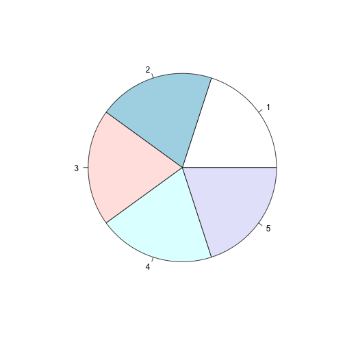
Some Basic R Plots
a <- c(1,2,3,4,5)
b <- c(1,2,3,4,5)
cor(a,b)
## [1] 1
plot(a,b,type="b")
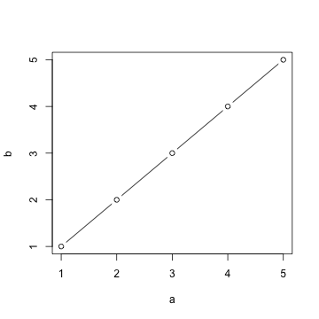
R Functions for Descriptive Statistics
This example was similar to the previous. Here we create a vector of 5 numbers using c(1,2,3,4,5) and we assign it to the variable/symbolic name a and b using the assignment operator (<-)
The ease at which statistical summaries can be generated on data objects is one of R's greatest strengths. In this simple example we saw how R can be used to produce:
- Univariate statistical estimates
- Bivariate statistical estimates
- Tabulate discrete variables, and estimate the PMF
- Plot univariate and bivariate data
Other useful R functions/operators
Hadley Wickham (R guru) lists many other useful R operators/functions in the vocabulary section of his online text.
Tom Short also created an awesome R Reference Card that enumerates many useful R operators/functions...
So far we've briefly touched on a very few number of these operators/functions. Over the course of this two day lecture I will slowly introduce you to some of the base R functions and other contributed functions that I think are most important in R programming.
When preparing this presentation (June 2014) there were 5563 contributed packages on CRAN each with it's own functions. Learning all of the functions would be close to impossible. For that reason we stress core functionality and programming basics, in hopes that a sound introduction will allow you to explore these packages and expand R functionality for your specific data analytic demands.
Summary of our First R Session
Everything in R is an object
- The goal is to use R functions/operators (which are themselves first class objects) to return values to the console (or other devices) or create new objects
The command prompt symbol > indicates that the R console is ready to read, parse and evaluate new expressions. If the command prompt symbol is absent (or appears as +) R has not finsihed processing previously submitted commands.
The most important functions we introduced so far are likely:
?to obtain help<-to assign variable/symbolic names to objects (Variable naming conventions)c(...)to combine elements into a vectorq()can be used to quit R
A final hint...R is CASE SENSITIVE (so watch out for that).
Laboratory Session (5-10 minutes)
Lab Objectives:
- Spend some time fooling around with R.
- Use
c(...)and the assingment operator (<-) to create some objects. - Apply some of the basic math/statistics functions to these objects.
- Explore and familiarize yourself with some functions on Tom /Hadley's list.
- Use R help (
?some.function) to learn more about these functions. - Explore the examples of how the functions work. For exmaple, try something like
example(mean).
- Use R help (
Data Structures in R
Data Structures in R
In most programming languages, variables provide a means of accessing data stored in memory. In R we cannot directly control memory allocation. Rather R comes equipped with a set of data structures which we refer to as objects and which act as containers for our data.
The most basic data structure in R is a vector.
R does not have scalars like other languages.
There are 6 basic ("atomic") vector types: logical, integer, numeric, complex, character and raw.
Data Structures in R
We can determine the properties of (vector type) objects using the functions: typeof(), mode() and storage.mode()
typeof() |
mode() |
storage.mode() |
|---|---|---|
| logical | logical | logical |
| integer | numeric | integer |
| double | numeric | double |
| complex | complex | complex |
| character | character | character |
| raw | raw | raw |
In this talk we will only really encounter logical, integer, numeric and character vactors. So in the next slides we will explore the properties of these types of vectors in greater detail.
Numeric vectors in R
a <- c(1.2, 2.3)
a
## [1] 1.2 2.3
typeof(a)
## [1] "double"
mode(a)
## [1] "numeric"
storage.mode(a)
## [1] "double"
We can test the "type/mode" of a vector using the functions: is.numeric() or is.double().
Integer vectors in R
a <- c(1L, 2L, 1:3)
a
## [1] 1 2 1 2 3
typeof(a)
## [1] "integer"
mode(a)
## [1] "numeric"
storage.mode(a)
## [1] "integer"
We can test the "type/mode" of a vector using is.integer(). 1L makes it clear to the evaluator that 1 is to be interpretted as an integer. : creates sequences of values.
Logical vectors in R
a <- c(TRUE, FALSE, TRUE, TRUE, F, rep(T, 2))
a
## [1] TRUE FALSE TRUE TRUE FALSE TRUE TRUE
typeof(a)
## [1] "logical"
mode(a)
## [1] "logical"
storage.mode(a)
## [1] "logical"
Here T, F, TRUE and FALSE are reserved words in the R language representing logical values TRUE and FALSE.
Characters vectors in R
a <- c(letters[1:3], LETTERS[24:26], "chris")
a
## [1] "a" "b" "c" "X" "Y" "Z" "chris"
typeof(a)
## [1] "character"
mode(a)
## [1] "character"
storage.mode(a)
## [1] "character"
The operators/functions letters and LETTERS are built in R constants. Try ?Constants, ?letters and ?LETTERS to learn more.
A few ways to create the same numeric vector
In R there usually exist multiple ways to skin a cat. Take the following example:
numvec1 <- c(1,2,3)
numvec1
## [1] 1 2 3
numvec2 <- seq(from=1, to=3, by=1)
numvec2
## [1] 1 2 3
numvec3 <- 1:3
numvec3
## [1] 1 2 3
Here we use three different R functions to accomplish the same endpoint, namely: c(...), seq() and :.
Vector conversion in R
A potentially strange aspect of R is that it is possible to create an object of a certain "type/mode" and then simply convert it to some other mode.
In some cases variable conversion can be useful when conducting data manipulation. In other cases, it fails miserably (and likely rightfully so)...
The new functions to check out include:
as.numeric()as.integer()as.logical()as.character()
Vector conversion in R
vec1 <- c(T,F,T,F)
as.numeric(vec1)
## [1] 1 0 1 0
vec2 <- c(letters[1:3])
as.numeric(vec2)
## Warning: NAs introduced by coercion
## [1] NA NA NA
Vector conversion in R
vec3 <- c(-2.5,-1.2,0,1L,2.1)
as.logical(vec3)
## [1] TRUE TRUE FALSE TRUE TRUE
as.character(vec3)
## [1] "-2.5" "-1.2" "0" "1" "2.1"
as.integer(vec3)
## [1] -2 -1 0 1 2
Vector conversion in R
In R we cannot create vectors of mixed type. If we attempt to do so R will perform vector conversion on it's own.
typeof(c(1.2,1L))
## [1] "double"
c(0,T,1,F)
## [1] 0 1 1 0
c(1,"chris",2,"dog")
## [1] "1" "chris" "2" "dog"
We stray off on a tangent now...
A few examples ago we encountered a special constant which is very important in R, namely: NA. We use NA to represent data which are missing or not available.
a <- c(1,2,3,4,5,NA)
is.na(a)
## [1] FALSE FALSE FALSE FALSE FALSE TRUE
mean(a)
## [1] NA
mean(a, na.rm=TRUE)
## [1] 3
We must take care to handle NA values appropriately. Also, note we can specify the type of NA, namely: NA_real_, NA_integer_, NA_character_ or NA_complex_.
Another tangent...More special R values
Some other special R values include:
NaNNot a numberInfPositive infinity-InfNegative infinity
0/0
## [1] NaN
1/0
## [1] Inf
-1/0
## [1] -Inf
The typeof() returned for all special values above is double. The mode() is numeric.
A final tangent...
The NULL object is used to specify empty objects. Or possibily to remove parts of complex objects. It strips an object of all associated data elements and attributes.
We can test the NULL property using is.null() and we can set the NULL property using as.null().
a <- c(1,2,3)
is.null(a)
## [1] FALSE
as.null(a)
## NULL
is.null(a)
## [1] FALSE
Getting back on track...vector indexing
We can extract ANY elements of an R vector using vector indexing operators/functions.
a <- c(1:5,NA)
length(a)
## [1] 6
a[1]
## [1] 1
a[is.na(a)==FALSE]
## [1] 1 2 3 4 5
a[c(1,2,6)]
## [1] 1 2 NA
Named vector elements
It is possible to name elements of a vector. These named elements can then be used in vector indexing (or element extraction).
a <- c(first=1, second=2, third=3)
a
## first second third
## 1 2 3
a[c("first","third")]
## first third
## 1 3
Vector Recycling
We can apply functions to vectors. If the vectors are the same length these commands will usually be performed element by element.
a <- 1:3
b <- 4:6
a
## [1] 1 2 3
b
## [1] 4 5 6
a+b
## [1] 5 7 9
Vector Recycling
If the vectors are not the same length then R will "recycle" the elements of the shorter vector and apply them to the longer vector. R will also throw up a warning at this point that the vectors are not the same length and that recycling has occurred. For example:
a <- 1:3
b <- 4:5
a
## [1] 1 2 3
b
## [1] 4 5
a+b
## Warning: longer object length is not a multiple of shorter object length
## [1] 5 7 7
Other R Data Structures
Vectors act as a basic building block for other R data structures. These more complicated data structures can basically be thought of as extension to vectors accounting for different "types/modes" or heterogeneous lengths:
This useful table is borrowed from Hadley's advanced R text book:
| Dimension | Homogeneous type/mode | Heterogeneous type/mode |
|---|---|---|
| 1-dimension | Vector | List |
| 2-dimension | Matrix | Dataframe |
| N-dimensions | Array |
We will use the following functions to explore the properties of these more complex data types:
str()attributes()class(),dim(),names(), etc...
Matrices in R
A matrix is a 2-D (flat) data structure which consists of columns (all of the same type/mode - usually numeric) where each column is of a consistent length. We can make a matrix with the matrix() function.
a <- matrix(1:9, ncol=3, nrow=3, byrow=TRUE)
a
Check out some of the optional arguments that can be passed to the matrix() function using ?matrix
Matrices in R
a <- matrix(1:9, ncol=3, nrow=3, byrow=TRUE)
str(a)
## int [1:3, 1:3] 1 4 7 2 5 8 3 6 9
class(a)
## [1] "matrix"
dim(a)
## [1] 3 3
Matrices in R
a <- matrix(1:9, ncol=3, nrow=3, byrow=TRUE)
names(a)
## NULL
rownames(a)
## NULL
colnames(a)
## NULL
Matrices in R
a <- matrix(1:9, ncol=3, nrow=3, byrow=TRUE)
colnames(a) <- paste0("COL",1:3)
rownames(a) <- paste0("ROW",1:3)
typeof(a)
## [1] "integer"
str(a)
## int [1:3, 1:3] 1 4 7 2 5 8 3 6 9
## - attr(*, "dimnames")=List of 2
## ..$ : chr [1:3] "ROW1" "ROW2" "ROW3"
## ..$ : chr [1:3] "COL1" "COL2" "COL3"
Matrices in R
a <- matrix(1:9, ncol=3, nrow=3, byrow=TRUE)
colnames(a) <- paste0("COL",1:3)
rownames(a) <- paste0("ROW",1:3)
attributes(a)
## $dim
## [1] 3 3
##
## $dimnames
## $dimnames[[1]]
## [1] "ROW1" "ROW2" "ROW3"
##
## $dimnames[[2]]
## [1] "COL1" "COL2" "COL3"
Matrices in R
You can make matrices of other types as well. Here is a matrix of strings/characters.
a <- matrix(LETTERS[seq(1,26,3)], ncol=3, nrow=3)
colnames(a) <- paste0("COL",1:3)
rownames(a) <- paste0("ROW",1:3)
a
## COL1 COL2 COL3
## ROW1 "A" "J" "S"
## ROW2 "D" "M" "V"
## ROW3 "G" "P" "Y"
typeof(a)
## [1] "character"
Matrices in R
And here is a matrix of logical values...
a <- matrix(sample(c(T,F),size=9,replace=TRUE), ncol=3, nrow=3)
colnames(a) <- paste0("COL",1:3)
rownames(a) <- paste0("ROW",1:3)
a
## COL1 COL2 COL3
## ROW1 TRUE FALSE FALSE
## ROW2 TRUE TRUE FALSE
## ROW3 FALSE FALSE FALSE
typeof(a)
## [1] "logical"
Matrices in R
Another way to make matrices is via the rbind() and cbind() functions. We basically create vectors and the bind them together either in a row/column wise manner.
a1 <- c(1,1,1)
a2 <- c(2,2,2)
a3 <- c(3,3,3)
mat <- cbind(a1,a2,a3)
colnames(mat) <- paste0("COL",1:3)
rownames(mat) <- paste0("ROW",1:3)
mat
## COL1 COL2 COL3
## ROW1 1 2 3
## ROW2 1 2 3
## ROW3 1 2 3
Give the rbind() approach a try on your own.
Matrices in R
We can extract elements of matrices via indexing, similar to how we did with vectors.
set.seed(12345)
a <- matrix(rnorm(9), ncol=3, nrow=3)
colnames(a) <- paste0("COL",1:3)
rownames(a) <- paste0("ROW",1:3)
a
## COL1 COL2 COL3
## ROW1 0.5855 -0.4535 0.6301
## ROW2 0.7095 0.6059 -0.2762
## ROW3 -0.1093 -1.8180 -0.2842
a[2:3,1:2]
## COL1 COL2
## ROW2 0.7095 0.6059
## ROW3 -0.1093 -1.8180
Matrices in R
Another really cool feature about R is how easy it is to implement basic/complex matrix algebra computations. Below are some useful matrix algebra functions:
nrow()andncol()count number of rows/columnst()yields matrix transposediag()extracts diagonal elements matrixupper.tri()andlower.tri()extract upper/lower triangular elements matrix%*%matrix multiplicationouter()and%o%perform outer product calculationscrossprod()andtcrossprodfor various cross product matriceseigen(),svd()andqr()for various matrix decompositionssolveto solve linear system equations (invert a matrix)
Lists in R
Another useful data structure in R is a list. It can also be viewed like a vector, in the sense that it contains elements (which can be indexed by position/name); however, each element can contain different "types/modes" of data (i.e. the type of data in a list does NOT have to be homogeneous).
We can create lists using list()
The "type/mode" of a list object is list.
Other important functions for list include:
is.list()as.list()unlist()
All our old favourite functions still apply: str(), attributes(), class(), names(), etc...
Lists in R
a <- list("R",rnorm(5),sample(c(T,F),4,replace=TRUE))
a
## [[1]]
## [1] "R"
##
## [[2]]
## [1] -0.9193 -0.1162 1.8173 0.3706 0.5202
##
## [[3]]
## [1] TRUE TRUE FALSE TRUE
typeof(a)
## [1] "list"
Apply some other functions to the list object a to explore the data structure.
Lists in R
There are 3 approaches to indexing lists in R: named indexing ($), positional indexing with [], and positional indexing with [[]]
a <- list(software="R",ran.num=rnorm(5),log.val=c(T,F,T))
a$software
## [1] "R"
a[1]
## $software
## [1] "R"
a[[1]]
## [1] "R"
Lists in R
We can also extract individual elements, of list elements (if that makes sense). In the list below, log.val is a logical vector (of length 3). It's second element is FALSE. We show two methods that work for extracting this value and one which does not work.
a <- list(software="R",ran.num=rnorm(5),log.val=c(T,F,T))
a$log.val[2]
## [1] FALSE
a[[3]][2]
## [1] FALSE
a[3][2]
## $<NA>
## NULL
Lists in R
List can also be recursive. That is, we can have lists of lists.
a <- list(visit=1, procedure=list(shots=list(type="flu", done=T)))
a
## $visit
## [1] 1
##
## $procedure
## $procedure$shots
## $procedure$shots$type
## [1] "flu"
##
## $procedure$shots$done
## [1] TRUE
is.recursive(a)
## [1] TRUE
Lists in R
Extracting elements from recursive lists can be a bit tricky. Below we show an example of how to extract the logical element corresponding to the flu shot being done (TRUE) from this recursive structure.
a <- list(visit=1, procedure=list(shots=list(type="flu", done=T)))
a[[2]][[1]][2]
## $done
## [1] TRUE
Lists in R
Another useful function is unlist(). We use this function when we want to take all of the elements and put them back into vector form. If the "types/modes" of the list elements are mixed/heterogeneous then we have to be cognisant of conversion.
a <- list("R",rnorm(5),c(T,F,T))
unlist(a)
## [1] "R" "-0.481647363694637" "0.620379801298422"
## [4] "0.612123492650849" "-0.162310976918126" "0.81187317855386"
## [7] "TRUE" "FALSE" "TRUE"
An interesting feature we see in this example which hasn't come up yet (surprisingly) is the numbers [1],[4],[7] on the left side of the output/console. In the R console, R will use these numbers to denote the index of the object at the leftmost position of the new line. So "R" is the first element of the vector. "TRUE" is the seventh element of the vector, etc...
Data frames in R
In R, a dataframe is a special type of list object. Basically, it is a list where all elements have the same length (or row dimension). In could also be viewed as a matrix object that has different "types/modes"...but that is naive.
Data frames are used extensively in statistical data analysis. So we will see lots of them in the latter half of the talk.
Data franes mimic the strucutres that Excel, SAS and SPSS users are familiar with (i.e. an item by variable matrix of data).
Data frames typically have certain important attributes:
names()give the column names of the data framerow.names()give row/item/case namesdim()will tell you the number of rows/columnsclass()will test that the object is a data framestr()andattributes()tie these info together
Data frames in R
There are many ways to create data frames in R. On this slide and the ones which follow we demonstrate a few of them.
a <- data.frame(c1=c(1,2,3),c2=c(T,F,T),c3=rnorm(3))
a
## c1 c2 c3
## 1 1 TRUE 2.197
## 2 2 FALSE 2.049
## 3 3 TRUE 1.632
So one useful function is data.frame().
Data frames in R
We can also use conversion on a list object. Here the function of choice is as.data.frame().
a <- as.data.frame(list(c1=c(1,2,3),c2=c(T,F,T),c3=rnorm(3)))
a
## c1 c2 c3
## 1 1 TRUE 0.2543
## 2 2 FALSE 0.4912
## 3 3 TRUE -0.3241
class(a)
## [1] "data.frame"
Data frames in R
Another "sketchy" way to get a data frame is via rbind() or cbind(). Type/mode conversion will occur behind the scenes (here everything is converted to numeric type).
c1=c(1,2,3)
c2=c(T,F,T)
c3=rnorm(3)
a <- as.data.frame(cbind(c1,c2,c3))
a
## c1 c2 c3
## 1 1 1 -1.6621
## 2 2 0 1.7677
## 3 3 1 0.0258
class(a)
## [1] "data.frame"
Data frames in R
R has a package called datasets. Type the following into your R console to learn more about the datasets that come shipped with your R installation: library(help = "datasets"). These datasets are usually data frames and act as a great learning resource when testing new/unfamiliar R functions.
In the example(s) which follow we are going to work with the cars data frame. Type ??cars into the console to then click on the appropriate link to learn more about cars.
In a nutshell, the cars data frame has 2 variables: speed (mph) and stopping distance (ft). We will investigate some functions that can be used to look into the relationship between speed and stopping distance.
Data frames in R
We can use the head() and tail() functions to look at the top parts and bottom parts of the cars data frame. Check out the arguments to these functions using R help.
library(datasets)
head(cars)
## speed dist
## 1 4 2
## 2 4 10
## 3 7 4
## 4 7 22
## 5 8 16
## 6 9 10
tail(cars, n=2L)
## speed dist
## 49 24 120
## 50 25 85
Data frames in R
We can also check out the structure of the cars data frame.
str(cars)
## 'data.frame': 50 obs. of 2 variables:
## $ speed: num 4 4 7 7 8 9 10 10 10 11 ...
## $ dist : num 2 10 4 22 16 10 18 26 34 17 ...
class(cars)
## [1] "data.frame"
dim(cars)
## [1] 50 2
names(cars)
## [1] "speed" "dist"
Data frames in R
We can index data frames just like matrices. We can do positional indexing as in the first example. Or we can do named indexing as in the second/third example.
cars[1:3,2]
## [1] 2 10 4
cars[c(1,2,3),"dist"]
## [1] 2 10 4
cars$dist[1:3]
## [1] 2 10 4
Data frames in R
The specific column vectors in a data frame maintain their "type/mode" identity. We can assess the "type/mode" of elements of a dataframe in a few ways.
class(cars$dist)
## [1] "numeric"
sapply(cars,class)
## speed dist
## "numeric" "numeric"
for (i in 1:dim(cars)[2]) { print(c(names(cars[i]), class(cars[,i]))) }
## [1] "speed" "numeric"
## [1] "dist" "numeric"
Data frames in R
Generic functions in R include functions like print(), summary(), plot() and others. Essentially, objects have classes. Classes are used to inform methods/dispatchers (?UseMethod) as to the type of object under consideration. These methods then choose the appropriate generic function for the class at hand.
The advantage of this type of an approach to programming is that one does not have to memorize all sorts of functions. I can simply experiment with the language, apply functions like summary() or plot() to a given object (of known class) and see what happens. In R, the result is usually a very sensible output being generated.
On the next two slides we experiment with summary() or plot().
Data frames in R
summary(cars)
## speed dist
## Min. : 4.0 Min. : 2
## 1st Qu.:12.0 1st Qu.: 26
## Median :15.0 Median : 36
## Mean :15.4 Mean : 43
## 3rd Qu.:19.0 3rd Qu.: 56
## Max. :25.0 Max. :120
Data frames in R
plot(cars)

Arrays in R
Arrays can be viewed as a multi-dimensional (n-dimensional) version of a matrix. All objects in an array must be of the same "type/mode".
Personally, I do not encounter arrays as much as the other data structures mentioned thus far (i.e. vectors, matrices, lists and data frames).
Many of the functions encountered thus far apply to arrays as well.
On the next slide we show a brief demo of how to generate an array but do not go into any more detail on these types of structures (i.e. just know they exist and might be valuable to you).
- Panel designs
- Spatio-temporal designs
Arrays in R
a <- array(1:18, dim=c(3,3,2))
a
## , , 1
##
## [,1] [,2] [,3]
## [1,] 1 4 7
## [2,] 2 5 8
## [3,] 3 6 9
##
## , , 2
##
## [,1] [,2] [,3]
## [1,] 10 13 16
## [2,] 11 14 17
## [3,] 12 15 18
Arrays in R
We can index arrays as well. For example:
a <- array(1:18, dim=c(3,3,2))
a[,,1]
## [,1] [,2] [,3]
## [1,] 1 4 7
## [2,] 2 5 8
## [3,] 3 6 9
a[1,,]
## [,1] [,2]
## [1,] 1 10
## [2,] 4 13
## [3,] 7 16
Other interesting data types in R
Two other types of data which R allows for, which have yet to be discussed are:
factor()Dates()
Factors are used to encode categorical data types (data values which take on a finite number of values). Factor types can be unordered (e.g. red, green, blue) or they can be ordered (e.g. small, medium, large). Explicitly defining a factor data type allows for very elegant handling of these types of data in statistical modelling (think contrasts if you're familiar with ANOVA).
Dates are perhaps the most difficult/annoying type of data to store in any software/programming language. One reason is because of the arbitry nature of time. And second because of the arbitrary nature of time, many methods exist for considering time as a construct.
In the next few slides we will discuss factor and Date storage in R.
Factors in R
Factors store data which take on a finite number of values.
Note: factors are NOT "atomic" vectors. Quick quiz, what are the 6 tpyes of "atomic" vectors again?
Factors are actually built on top of integer vectors. The integer vector stores the data corresponding to the actual factor levels. Whereas, a second vector is used to store the data corresponding to the mapping between levels and labels.
Typically, when we want to display discrete data like this we use tabulation - in R this is implemented through the function table(). Table proportions can be easily generated through the use of prop.table().
Factors in R
set.seed(1234)
a <- factor(sample(c("A","B","C"),size=10,replace=TRUE))
a
## [1] A B B B C B A A B B
## Levels: A B C
class(a)
## [1] "factor"
levels(a)
## [1] "A" "B" "C"
Factors in R
Discrete values a factor can take on are called levels. We can associate labels with each level.
set.seed(1234)
a <- factor(sample(c("A","B","C"),size=10,replace=TRUE), labels=c("Lab A", "Lab B", "Lab C"))
levels(a)
## [1] "Lab A" "Lab B" "Lab C"
nlevels(a)
## [1] 3
Factors in R
We can tabulate factor variable quickly using table() and prop.table().
set.seed(1234)
a <- factor(sample(c("A","B","C"),size=10,replace=TRUE))
table(a)
## a
## A B C
## 3 6 1
prop.table(table(a))
## a
## A B C
## 0.3 0.6 0.1
Factors in R
Here I know there is no female data points in this data vector. That is, it is structurally missing in the data (or it could be a sampling zero). However, I can make this explicit to R at the time of factor assignment.
a <- factor(c("M","M","M"),levels=c("M","F"),labels=c("Male","Female"))
table(a)
## a
## Male Female
## 3 0
Factors in R
Here we order the factor levels using the argument ordered=TRUE in the factor() call. We make males the first ordered level and females the second ordered level.
a <- factor(c("F","F","M"),levels=c("M","F"),labels=c("Male","Female"),ordered=TRUE)
class(a)
## [1] "ordered" "factor"
table(a)
## a
## Male Female
## 1 2
Factors in R
We can also make factors out of continuous variables using the cut() function. Check out the details at ?cut.
set.seed(1234)
x <- rnorm(10000)
factor.x <- cut(x,breaks=quantile(x,probs=seq(0,1,0.25)),include.lowest=TRUE)
table(factor.x)
## factor.x
## [-3.4,-0.661] (-0.661,0.00463] (0.00463,0.67] (0.67,3.62]
## 2500 2500 2500 2500
prop.table(table(factor.x))
## factor.x
## [-3.4,-0.661] (-0.661,0.00463] (0.00463,0.67] (0.67,3.62]
## 0.25 0.25 0.25 0.25
Factors in R
Factors are VERY important when fitting ANOVA type models. n.b. The goal of ANOVA models is to partition the total response variation into that which is attributable to the model (which is made up of possibly many discrete factors and their interactions) and the residual noise which remains (the part of the response variation not explained by the model).
Some important functions to remember for these tasks include:
factor(..., ordered=)C()orcontrasts()contr.helmert()contr.poly()contr.sum()contr.treatment()
interaction(..., drop=)
If these concepts are unfamiliar review MASS (Venables and Ripley).
Dates in R
Braun and Murdoch (p. 21) concur that dates are amongst the most difficult types of data to program with in any language. For example, there exist different calendars (Gregorian and Julian). Years can have different number of days (leap years). Seconds can vary by time zone (leap seconds). Etc...
R has a number of different ways to deal with dates, which include:
POSIXctfor dates and times with time zonesPOSIXltfor dates and times with time zones (different representation)chronlibrary for dates with times (no time zones)Datesdates without time zones
R has a number of different packages to help with date storage and date manipulation/processing:
chronlubridate
Dates in R
The POSIX (portable operating system interface for UNIX class) class of dates include POSIXct and POSIXlt. They are the most complex way of representing dates/times and are useful when dates being represented may exist in different time zones.
POSIXctrepresents the SIGNED number of seconds since the (arbitrary) time origin of the beginning of 1970.POSIXltrepresents time using the following of objects, namely:secin set 0-61minin set 0-59hourin set 0-23mdayin set 0-31monin set 0-11yearsince 1900- Other elements include:
wday,yday,isdst,zone
Dates in R
datetime.today <- Sys.time()
datetime.today
## [1] "2014-06-09 08:57:04 EDT"
class(datetime.today)
## [1] "POSIXct" "POSIXt"
Dates in R
When dealing with just dates (without time or time zone consideration) the Date class of objects is often a sufficient representation.
In the Date class of objects, we store dates as the number of days since 1970-01-01. Dates in this format always follow the Gregorian calendar definition of time.
When working with dates there are many useful functions. Two key functions are strptime() and strftime(). Use ?strptime to see all the interesting ways we can manipulate a date.
## Our first date
date.today <- Sys.Date()
date.today
## [1] "2014-06-09"
Dates in R
strftime(date.today, "%B")
## [1] "June"
strftime(date.today, "%D")
## [1] "06/09/14"
strftime(date.today, "%Y")
## [1] "2014"
weekdays(date.today)
## [1] "Monday"
Summary of Data Structures Module
In this section we introduced many different data structures. The most basic data structure is a vector. Given a vector we showed how to derive the following data structures:
- Matrices/Arrays
- Lists
- Data frames
Other important data structures in R include:
- Factors
- Dates
Lab Session (20 minutes)
Lab Session Exercises
What are the 6 main types of "atomic" vectors?
What will the
typeof(),mode(),class()etc. be in the following instances?c(1,T,F,0)c(1,2,3,"a","b","c")c(1:3)andc(1:3,NA_real_)
What will be returned in the following instances?
sum(c(T,F,F,T,F,T))"three" >= "two"
Create the following matrix:
mat <- matrix(1:9,ncol=3).- How many ways can you think of to extract the main diagonal of
mat? - How many ways can you think of to extract the lower triangular sub-matrix of
mat?
- How many ways can you think of to extract the main diagonal of
Lab Session Exercises
Create the following matrix
mat <- matrix(1:9,ncol=3).- How many ways can you think of to get the column means of
mat? - Same idea with row means.
- How many ways can you think of to get the column means of
In matrix notation the OLS/MLE solution for the regression coeffiicients of a linear regression model can be expressed as:
\[ \hat{\boldsymbol\beta} = (\mathbf{X}^{\rm T}\mathbf{X})^{-1} \mathbf{X}^{\rm T}\mathbf{y} \]
- Using the cars dataset investigate the relationship between distance (response variable) as a function of speed (independent variable).
- Create the vector \(\mathbf{y}\) and the design matrix \(\mathbf{X}\). Dont forget the leading column vector of 1's. Using all of R's fancy matrix algebra functions estimate the \(\hat{\boldsymbol\beta}\) vector.
- Compare your matrix algebra approach with the following code:
lm(dist~speed,data=cars)
Lab Session Exercises
- Use the following R code to simulate 100 random normal variates.
set.seed(1234)
x <- rnorm(100)
- Using the
cut()function create a vector from these hundred random normal variables where the values fall between "[min, 0]", "(0, 1]", "(1, max]".
## xcut
## [-2.35,0] (0,1] (1,2.55]
## 65 21 14
- Create the following variable `today.date <- Sys.Date()`.
- Applying R date and string manipulation functions to the object
today.datecreate the following sentence.
## [1] "Today, Monday the 09th of June, 2014 is the nicest day I've ever seen!"
Control Structures in R
Control Structures in R
This module introduces some basic R programming constructs which are the building blocks of many of the complicated programs you may wish to write.
- Coniditional processing
- The
ifandelsestatements - The vectorized
ifelse()function
- The
- Looped execution
- The
forloop - The
whileloop
- The
- Vectorized programming
- The
applyfamily of functions, including:apply(),sapply(),lapply(),tapply(), etc...
- The
The if and else statements
We use if statements to "branch" computation in our programs. Essentially, the program will conduct some computation is a certain logical condition returns TRUE, else the program will conduct some other computation if the logical condition returns FALSE.
The basic structure of such a program could look as follows:
if (logical.expression1) {
expression1
...
} else if (logical.expression2){
expression2
...
} else {
expression3
}
To learn more about control flow function in R try ?"if" and ?"else".
The if and else statements
This example relates to findings the roots of a quadratic function (Jones et al, p. 32):
\[f(x)=ax^2+bx+c,\quad a \ne 0\]
The discriminant of the function is calculated as: discrim = b^2 - 4*a*c
The value of the roots depend on the discriminant. We will show the roots of this quadratic (polynomial) equation depending on the roots.
The if and else statements
Lets take a=1, b=4, c=5.
a2=1 ; a1=4 ; a0=5 ;
discrim = a1^2 - 4*a2*a0
if (discrim > 0) {
r1 <- -a1 + sqrt(a1^2 - 4*a2*a0)/(2*a2)
r2 <- -a1 - sqrt(a1^2 - 4*a2*a0)/(2*a2)
roots <- c(r1,r2)
} else if (discrim==0) {
roots <- c(-a1(2*a2))
} else {
roots <- c()
}
show(roots)
## NULL
The if and else statements
Lets just make a plot of that function using curve() which verifies there are no real roots:
\[f(x)=a^2+4x+5,\quad a \ne 0\]
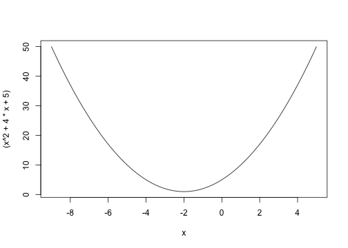
The if and else statements
R also comes with a vectorized ifelse() function which can be used for all sorts of things.
set.seed(1234)
a <- rnorm(10)
round(a,digits=2)
## [1] -1.21 0.28 1.08 -2.35 0.43 0.51 -0.57 -0.55 -0.56 -0.89
table(factor(ifelse(a < -0.5, 0, ifelse(a < 0, 1, 2)),level=c(0,1,2)))
##
## 0 1 2
## 6 0 4
table(cut(a,breaks=c(min(a),-0.5,0,max(a)),include.lowest=TRUE))
##
## [-2.35,-0.5] (-0.5,0] (0,1.08]
## 6 0 4
The for loop
The for loop is useful for computing grouped expressions. Specifically, where the group of expression varies as a function of an iterating veriable. For example:
for (i in vector) {
expression.i
...
}
So we define an iterator i and we call the expression.i for as many times as the vector tells us to.
The for loop
A classic example with for loops is calculating the first, say, N numbers in the Fibonacci sequence. This example comes from Bruan & Murdoch (p. 48).
Fibonacci <- numeric(11)
Fibonacci[1] <- 1
Fibonacci[2] <- 1
for (i in 3:12) {
Fibonacci[i] <- Fibonacci[i-2] + Fibonacci[i-1]
}
show(Fibonacci)
## [1] 1 1 2 3 5 8 13 21 34 55 89 144
The for loop
Jones et al (p. 33) demonstrate the use of a for loop in vector summation.
x.list <- seq(1,7,by=2)
sum.x <- 0
for (x in x.list) {
sum.x <- sum.x + x
cat("The current value of the loop is", x, sep="\n")
cat("The current value of the cumulative sum is", sum.x, sep="\n")
}
The results are shown on the next slide.
The for loop
## The current loop element is 1
## The current value of the cumulative sum is 1
## The current loop element is 3
## The current value of the cumulative sum is 4
## The current loop element is 5
## The current value of the cumulative sum is 9
## The current loop element is 7
## The current value of the cumulative sum is 16
Using cat() to display the current value of the iterating variable and also the returned value of the function/expression at a given iteration value can be useful for elucidating the for loop mechanism. And is also a nice debugging technique.
The while loop
The while loop is used to execute a given expression as long as some other logical condition holds true. The while loop take the form:
while (logical.expression) {
expression.1
...
}
Basically, we evaluate logical.expression if it is TRUE then we evaluate expression.1. Then we re-evaluate the logical expression, if it is still TRUE, then we go back and evluate expression.1. This continues until the logical.expression evaluates to FALSE and we break out of the while loop.
Jones et al (p. 37) call the while loop more fundamental than the for loop, stating that any for loop can be written as a while loop.
The while loop
In this example we use a while loop to calculate the Fibonacci sequence again.
F <- c(1,1)
n <- 2
while (F[n] <= 100) {
cat("n = ", n, " F[n] =", F[n], "\n")
n <- n +1
F[n] <- F[n-1] + F[n-2]
}
## n = 2 F[n] = 1
## n = 3 F[n] = 2
## n = 4 F[n] = 3
## n = 5 F[n] = 5
## n = 6 F[n] = 8
## n = 7 F[n] = 13
## n = 8 F[n] = 21
## n = 9 F[n] = 34
## n = 10 F[n] = 55
## n = 11 F[n] = 89
The while loop
A very important application of while loops in statistics is root finding. That is, finding points where \(x: f(x)=0\).
The Newton-Raphson is one such method for numerically finding roots to "nice" continuously differentiable functions \(f(x)\). Basically, the algorithm proceeds with an initial guess at the root value: \(x_0\). Then a better approximation is achieved through the following update formula.
\[ x_{n+1} = x_n - \frac{f(x_n)}{f'(x_n)} \]
Algorithmically, we continue evaluating this update formula until the change in returned values \(f(x_{n+1}) - f(x_n)\) becomes smaller than some threshold/tolerance value. This can be easily applied via a while loop as Braun and Murdoch demonstrate (p. 55).
This simple algorithm could form the (naive) basis of OLS/MLE style optimizers for certain classes of maximization and minimization problems.
The while loop
Lets start by using the Newton-Raphson method to find the roots of the following polynomial function: \(f(x) = x^3 + 2x^2 - 7\).
x <- x0 <- 3
f <- x^3 + 2*x^2 - 7
tol <- 0.00001
while(abs(f) > tol) {
f.prime <- 3*x^2 + 4*x
x <- x - (f/f.prime)
f <- x^3 + 2*x^2 - 7
}
show(x)
## [1] 1.429
The while loop
We can make a plot assessing how close our approximation was to the truth using curve():
curve(expr=(x^3 + 3*x^2 - 7), from=-9, to=5)
abline(v=x,col="red")
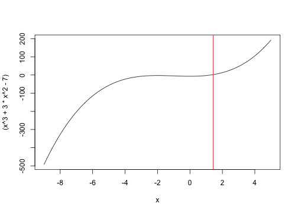
The apply family of functions
Being a functional programming language (where functions are first class objects) it is possible in R to pass a function as an argument in the formals of another function.
The apply family of functions works by applying a function to all selected elements of a list or data.frame or some other R object.
Check out the following functions:
apply()can apply a function over a vector/arraysapply()can apply a function over a vector/arraylapply()can apply a function over a listtapply()can apply a function over subsets of data (usually vectors/arrays)
The apply() family of functions is very powerful, however, given there are so many variants it can be tricky to learn which functions to apply when (this will come with time and practice).
Also, Hadley Wickham (R guru) has reworked some of these functions and implemented them in his plyr package.
The apply family of functions
Here we will work with the cars data frame again. We use the apply function to derive some summary values (here over the columns of the data.frame).
suppressPackageStartupMessages(library(datasets))
apply(cars,2,class)
## speed dist
## "numeric" "numeric"
apply(cars,2,mean)
## speed dist
## 15.40 42.98
The apply family of functions
The sapply() function works very similarly to lapply() except might return output in a more appropriate form (i.e. lapply() returns lists; whereas, sapply() can return vectors, matrices and arrays).
sapply(cars,mean)
## speed dist
## 15.40 42.98
lapply(cars,mean)
## $speed
## [1] 15.4
##
## $dist
## [1] 42.98
The apply family of functions
Here we compare the tapply(), aggregate() and by() functions.
tapply(cars$speed,ifelse(cars$dist>20,0,1),mean)
## 0 1
## 16.95 9.20
by(cars$speed,ifelse(cars$dist>20,0,1),mean)
## ifelse(cars$dist > 20, 0, 1): 0
## [1] 16.95
## --------------------------------------------------------
## ifelse(cars$dist > 20, 0, 1): 1
## [1] 9.2
aggregate(cars$speed,list(ifelse(cars$dist>20,0,1)),mean)
## Group.1 x
## 1 0 16.95
## 2 1 9.20
Summary of control structures
The purpose of this module was to introduce you to basic control structures that can be used to build more complex programs.
In this chapter we demonstrated a number of key concepts:
- Execution of conditional logical statements with
ifandelse - Processing statements over elements of a vector with
forloops. - Processing statements while a logical condition is true with
whileloops - Applying functions over data structures with the
applyfamily of functions
Lab Session (10-20 minutes)
Lab Session
Create the following matrix
mat <- matrix(1:9,ncol=3).- How many ways can you think of to extract the main diagonal of
mat?
- How many ways can you think of to extract the main diagonal of
Create the following matrix
mat <- matrix(1:9,ncol=3).- How many ways can you think of to get the column means of
mat?
- How many ways can you think of to get the column means of
Using
ifandelsestatements create the following vector of data:
## [1] 1 2 3 4 5 2 3 4 5 6 3 4 5 6 7 4 5 6 7 8 5 6 7 8 9
- Consider the following number: $ \varphi = \frac{1+\sqrt{5}}{2} = 1.6180339887\ldots. $
- The number above is called the golden ratio. It arises as the limit of the ratio of two successive Fibonacci numbers (amongst other ways). Using the programs demonstrated previously to calculate Fibonacci sequences obtain a vector output. Then calculate the ratio of two successive values and see what it converges to in the limit.
Lab Session
- Copy and paste the code below into your console. Explain to yourself what each step is doing.
set.seed(123456789)
vec <- numeric(10000)
vec <- sapply(vec,function(x){mean(rgamma(100,1,2))})
plot(density(vec),main="Plot of mean of 10000 Gamma(1,2) RV's", xlab="Support", xlim=c(0,1))
- What statistical concept have you just demonstrated to yourself? Does this hold true for other distributions (other than
rgamma())?
Functions in R
Functions in R
Up to this point we have encountered many of R's functions, perhaps without giving much thought to their inner workings.
Functions or programs or routines are well-defined pieces of code. They take inputs (arguments), perform calculations on these inputs (within some scope/environment), and then return outputs (either to the console, to some other device or as objects).
In R, functions are first class objects, and can themselves be passed to other functions. This is a very powerful approach to programming, and allows R to accomplish tasks in few lines of code, where other programming languages would require many lines of code.
There are 3 parts to all R functions:
formals()which define the inputs to a function.body()which defines what computations are performed on inputs.environment()returns the environment associated with a given function.
Functions in R
What does open source mean in R?
- Most people equate open source to the fact that R is freely accessible.
- However, perhaps more importantly, open source also means that almost all programs/functions used to conduct data analysis in R are available to investigate, learn from, manipulate and imporve upon.
To access the body of a given R function you can:
- Type the function name into the console without brackets/parentheses.
- Use the
body()function
Functions in R
In this example we type sd into the console and see what is written about the standard deviation function in R (essentially, all we learn is that it is the square root of the var() function).
sd
## function (x, na.rm = FALSE)
## sqrt(var(if (is.vector(x)) x else as.double(x), na.rm = na.rm))
## <bytecode: 0x7fef6b9ca158>
## <environment: namespace:stats>
Functions in R
We can learn a little more about sd() using the following commands:
formals(sd)
## $x
##
##
## $na.rm
## [1] FALSE
body(sd)
## sqrt(var(if (is.vector(x)) x else as.double(x), na.rm = na.rm))
environment(sd)
## <environment: namespace:stats>
body(var)
## {
## if (missing(use))
## use <- if (na.rm)
## "na.or.complete"
## else "everything"
## na.method <- pmatch(use, c("all.obs", "complete.obs", "pairwise.complete.obs",
## "everything", "na.or.complete"))
## if (is.na(na.method))
## stop("invalid 'use' argument")
## if (is.data.frame(x))
## x <- as.matrix(x)
## else stopifnot(is.atomic(x))
## if (is.data.frame(y))
## y <- as.matrix(y)
## else stopifnot(is.atomic(y))
## .Call(C_cov, x, y, na.method, FALSE)
## }
Functions in R
Basically, all we can find out is the sd() is related to var(). And further, that var() is computed via a .Call to some C function/routine likely called C_cov.
The moral of the story is that, even though R is open source, and almost all source code is freely viewable/obtainable to the end user, sometimes it is still difficult to recover information about functions because within them you see things like: .C, .Call, .Fortan, .External, .Internal or .Primitive.
These symbols usually mean that the underlying code you are after is written in some other (compiled) language for speed purposes. I recommend the following articles for help in these scenarios:
Functions in R
The ease at which programmers can generate/create user defined functions is another key selling point for R. Basically, the function called function() will help to create user-defined functions. Try saying that 3 times fast!!
The basic building blocks to an R function look as follows:
function.name <- function(arglist) {
function.body
...
return(some.value)
}
Functions in R
Here we invesitigate one of the simplest function in any programming language, the hello.world function/routine. The purpose of this simple function is to return the string "Hello World" when the function is called (with no arguments).
hello.world <- function(){
paste(c("Hello World"))
}
hello.world()
## [1] "Hello World"
We give a name to the function: hello.world. In this case there are no arguments (formals) associated with the function. We define a body to the function, here it just returns the character vector Hello World. Further it was created in the environment called R_GlobalEnv (the R Global Environment).
Functions in R
hello.world <- function(){paste(c("Hello World"))}
formals(hello.world)
## NULL
body(hello.world)
## {
## paste(c("Hello World"))
## }
environment(hello.world)
## <environment: R_GlobalEnv>
Functions in R
This example comes from Jones et al (p. 65) and relates to calculating a factorial.
fact.func <- function(n) {
return(prod(1:n))
}
fact.func(5)
## [1] 120
factorial(5)
## [1] 120
Functions in R
Another more involved example consider calculating a mean using base R function only (no math).
my.mean <- function(x) {
tot <- rep(NA,length(x))
for (i in 1:length(x)) {
if (i==1){
tot[i] = 0
} else {
tot[i] <- x[i] + tot[i-1]
}
}
return(tot[length(x)]/length(x))
}
Can you write a more concise function? Probably. Give it a try!!
Functions in R
my.mean(0:10)
## [1] 5
mean(0:10)
## [1] 5
Functions in R
Function can return output other than numeric values (plot() is a good example of this). In this example we write a function that produce a kernel density estimator (?density), gives the same xlim, ylim, xlab and ylab arguments. I want to call this plot on 9 different simulated datasets so I dont want to have to type the same code over-and-over again (I want to automate the process).
set.seed(98765)
dens.fun <- function(x) {
p <- plot(density(x), xlim=c(0,1),xlab="Support",main="",ylim=c(0,2.5),yaxt="n")
axis(2,las=2,at=c(0,0.5,1,1.5,2.0,2.5),tick=TRUE)
}
x <- expand.grid(c(0.05,0.5,5),c(0.05,0.5,5))
par(mfrow=c(3,3))
for (i in 1:dim(x)[1]) {
dens.fun(rbeta(1000,shape1=x[i,1],shape2=x[i,2]))
}
par(mfrow=c(1,1))
Functions in R
Plots of various beta densities (beta PDF's).

Functions in R
Functions are first class objects in R. They can be called by other functions. And this can make programming beautifully simple/efficient.
You can extract information about functions using the following functions:
formals()body()environment()
In theory all source code from which R functions are derived is available to read, learn from, and improve upon. It can be a bit tricky to get at some compiled code.
The function() function, can be used to help create user defined functions. Whenever you have a repetitive task that you need to automate, creating a user defined function to perform that task is often a good idea (it can help make code cleaner).
Lab Session (20 minutes)
Lab Session
What are the three key parts to a function in R?
Go back to the second on
control structures. Embed the Fibonacci sequence loop (fororwhile) into afunctioncall with a single argument specifying the length of the sequence. What is the largest Finobacci number less then 1,000,000?Write an R function which takes on two arguments
iandn, whereirepresents the interest rate andnrepresents the number of discrete periods where the loan compounds. Given an initial loan amount or present value (PV) determine the future value of the loan (FV) when:- i=0.025, n=30, PV=500,000
- i=0.075, n=30, PV=500,000
- i=0.025, n=15, PV=500,000
- i=0.075, n=15, PV=500,000
- Note: future values (FV) for simple compound interest problems are calculated as follows: \(FV = PV ( 1+i )^n\)
Functions in R
- The following two are adapted from Jones et al (p. 65-66) and relate to estimating a "trimmed mean" and a "windsorized mean", respectively. Basically, each robust estimator adjusts the value of the "k" largest/smallest values prior to estimation (they can be viewed as types of weighted means). Below are definitions for each. Implement them as functions in R (hint: your function should take on two arguments, one denoting the data, and two denoting the number, k, of elements to be trimmed/winsorized).
Let \(\mathbf{x} = \{x_1, x_2,\dots, x_n\}\) be an i.i.d sample from some distirbution \(\mathcal{F(\theta)}\). We define the order statistics of \(\mathbf{x}\) as \(x_{(1)} \leq x_{(2)} \leq \dots \leq x_{(n)}\). The first equation defines the trimmed mean and the second equation defines the windsorized mean. Implement both as R functions.
\[ \overline{x}_{(trimmed)} = \frac{x_{(k+1)} + \dots + x_{n-k}}{n-2k}\]
\[ \overline{x}_{(windsorized)} = \frac{(k+1)*x_{(k+1)} + x_{(k+2)} + \dots + x_{(n-k+1)} + (k+1)*x_{n-k}}{n}\]
String Manipulation in R
String Manipulation in R
R is traditionally thought of as a statistical language, and as such has impressive routines for performing calculation on numeric vectors and matrices, and for performing random number generation.
However, text data is becoming increasingly prevalent and increasingly important.
- How much text data exists on the internet?
- Mining academic literature.
- Mining social media platforms.
- Data from genetic sequences (A,T,C,G base pairs, etc.).
- Text data in electronic medical records.
Base R has a rich assortment of functions for string manipulation. Additionally, the stringr library is an invaluable resource and more info on it can be accessed here.
String Manipulation in R
In this module we are going to work with a simple vector of strings/characters which represent the names of the 50 states.
suppressPackageStartupMessages(library(datasets))
state.name
## [1] "Alabama" "Alaska" "Arizona" "Arkansas"
## [5] "California" "Colorado" "Connecticut" "Delaware"
## [9] "Florida" "Georgia" "Hawaii" "Idaho"
## [13] "Illinois" "Indiana" "Iowa" "Kansas"
## [17] "Kentucky" "Louisiana" "Maine" "Maryland"
## [21] "Massachusetts" "Michigan" "Minnesota" "Mississippi"
## [25] "Missouri" "Montana" "Nebraska" "Nevada"
## [29] "New Hampshire" "New Jersey" "New Mexico" "New York"
## [33] "North Carolina" "North Dakota" "Ohio" "Oklahoma"
## [37] "Oregon" "Pennsylvania" "Rhode Island" "South Carolina"
## [41] "South Dakota" "Tennessee" "Texas" "Utah"
## [45] "Vermont" "Virginia" "Washington" "West Virginia"
## [49] "Wisconsin" "Wyoming"
String Manipulation in R
These data are stored in a character vector. We can make use of all of our vector manipulation tools when working with these data.
The length() function tells us this vector contains 50 state names. The nchar() function tells us the number of characters/letters making up each state name. We plot the discrete distirbution of number of characters in a table().
length(state.name)
## [1] 50
table(nchar(state.name))
##
## 4 5 6 7 8 9 10 11 12 13 14
## 3 3 5 8 12 4 4 2 4 3 2
String Manipulation in R
We can convert the letters to and from upper and lower case using the following functions:
- toupper()
- tolower()
head(toupper(state.name),n=3)
## [1] "ALABAMA" "ALASKA" "ARIZONA"
head(tolower(state.name),n=3)
## [1] "alabama" "alaska" "arizona"
String Manipulation in R
What is we had upper case data and we wanted to keep only the first letter of each string upper case and convert all other characters to lower case? Here we demo length(), nchar(), substr(), topupper(), tolower(), paste0() and more...
upper.state.name <- toupper(state.name)
first.letter <- substr(upper.state.name,1,1)
rest.letters <- character(length(upper.state.name))
for (i in 1:length(upper.state.name)) {
rest.letters[i] <- tolower(substr(upper.state.name[i],2,nchar(upper.state.name[i])))
}
state.name.again <- paste0(first.letter,rest.letters)
head(state.name.again,n=3)
## [1] "Alabama" "Alaska" "Arizona"
String Manipulation in R
Whats the difference between paste() and paste0()?
- In
paste()the separator is a single white space (default...which can be changed). - In
paste0()the separator is no space.
Here are some cool things paste() can do:
paste(1:5, LETTERS[1:5])
## [1] "1 A" "2 B" "3 C" "4 D" "5 E"
paste(1:5, LETTERS[1:5], sep="-")
## [1] "1-A" "2-B" "3-C" "4-D" "5-E"
paste(1:5, LETTERS[1:5], sep="&")
## [1] "1&A" "2&B" "3&C" "4&D" "5&E"
String Manipulation in R
Type ?paste into your console. Check out the collapse argument. This can be useful if we want to combine various parts of a character vector into a single element vector consisting of one long string. For example:
a <- c("cat","god","dog")
paste(a, collapse=" ")
## [1] "cat god dog"
paste(a, collapse=" & ")
## [1] "cat & god & dog"
String Manipulation in R
We can perform (simple) pattern matching with the function grep(). For example, what proportion of the state names contain the vowel "a"?
state.a <- grep(pattern="[aA]",state.name)
state.name[state.a]
## [1] "Alabama" "Alaska" "Arizona" "Arkansas"
## [5] "California" "Colorado" "Delaware" "Florida"
## [9] "Georgia" "Hawaii" "Idaho" "Indiana"
## [13] "Iowa" "Kansas" "Louisiana" "Maine"
## [17] "Maryland" "Massachusetts" "Michigan" "Minnesota"
## [21] "Montana" "Nebraska" "Nevada" "New Hampshire"
## [25] "North Carolina" "North Dakota" "Oklahoma" "Pennsylvania"
## [29] "Rhode Island" "South Carolina" "South Dakota" "Texas"
## [33] "Utah" "Virginia" "Washington" "West Virginia"
length(state.a)/length(state.name)
## [1] 0.72
String Manipulation in R
How many state names contain Wheel of Fortune style consonants or vowels?
state.wheel <- grep(pattern="[rRsStTlLnNeE]",state.name)
state.name[state.wheel]
## [1] "Alabama" "Alaska" "Arizona" "Arkansas"
## [5] "California" "Colorado" "Connecticut" "Delaware"
## [9] "Florida" "Georgia" "Illinois" "Indiana"
## [13] "Kansas" "Kentucky" "Louisiana" "Maine"
## [17] "Maryland" "Massachusetts" "Michigan" "Minnesota"
## [21] "Mississippi" "Missouri" "Montana" "Nebraska"
## [25] "Nevada" "New Hampshire" "New Jersey" "New Mexico"
## [29] "New York" "North Carolina" "North Dakota" "Oklahoma"
## [33] "Oregon" "Pennsylvania" "Rhode Island" "South Carolina"
## [37] "South Dakota" "Tennessee" "Texas" "Utah"
## [41] "Vermont" "Virginia" "Washington" "West Virginia"
## [45] "Wisconsin" "Wyoming"
String Manipulation in R
A related function to grep() is gsub() which can be used to substitute some string matching a given pattern for some other string. Say I had the following telephone numbers in various formats and wanted them all in the same format.
phones <- c("416-967-1111","674-5551212", "4169941234")
phones1 <- gsub(pattern="-",replacement="",phones)
phones
## [1] "416-967-1111" "674-5551212" "4169941234"
phones1
## [1] "4169671111" "6745551212" "4169941234"
String Manipulation in R
R lists a number of important functions for pattern matching and replacement. Some other cool functions that we will check out in the regular expression section include:
grep()grepl()sub()gsub()regexpr()gregexpr()regexec()strsplit()
String Manipulation in R
The last area I will touch upon with respect to string manipulation in R deals with regular expressions.
When dealing with character data regular expression are used to identify patterns and extract/modify strings constaining (or not containing) the pattern, in some predefined way.
All of the functions listed on the previous slide can be used to implement regular expressions on textual data in R.
One of the best concise introductions to regular expression in R I know of is Spector (p. 87-99).
String Manipulation in R
Regular expressions are composed of 3 components:
- Literal characters which match single characters
- Character classes which match any number of characters
- Modifiers (sometimes called meta characters) act to modify literal characters and character classes
Modifiers include the following symbols:
.^+?*( )[ ]{ }|\
Becuase these regular expression modifiers have their own meaning in the R language we must use R's escape character \ to inform the interpreter that they are to be used in the sense of regular expression.
If you weren't confused yet, \ represents the escape character in R. So we actually need to escape the escape character (ahhh)...and use two backslashes (\\) prior to these modifiers (Matloff, p. 255 is a nice discussion on this topic).
String Manipulation in R
This table comes from Spector (p. 92) and acts to describe the purpose of each of the modifiers (meta characters) mentioned on the last slide:
| Modifier | Meaning for Regular Expression |
|---|---|
^ |
Anchors expression to beginning target |
$ |
Anchors expression to end target |
. |
Matches any single char. except newline |
| |
Separates alternative patterns |
() |
Groups patterns together |
* |
Matches 0+ occurrences of prior entry |
? |
Matches 0/1 occurrences of prior entry |
+ |
Matches 1+ occurences of prior entry |
{n} |
Matches exactly n occurrences prior entry |
{n,} |
Matches at least n occurrences prior entry |
{n,m} |
Matches between n and m occurrences entry |
String Manipulation in R
We're going to look at a couple of functions all of which take as arguments a regex and some character vector and return different output:
grep()returns indices of vector where regex equalsTRUEgrepl()Returns logical flag (TRUE/FALSE) for element of vector given regexregexpr()returns location and length of first match regexgregexpr()returns location and length of all matches from regex
Some important arguments for these functions:
ignore.case=determines if regex is case sensitive or notfixed=determines whether pattern should be interpretted in regex notation or literallyvalue=determines if output should be actual character string or other information (logicals, indices, etc.). n.b.valueonly applies togrep()
String Manipulation in R
A regular expression which matches two consecutive numbers followed by any letter (lower/upper case).
a <- c("cat", "99cat", "99Z", "9Z9")
grep(pattern="[0-9][0-9][a-zA-Z]+",a)
## [1] 2 3
grepl(pattern="[0-9][0-9][a-zA-Z]+",a)
## [1] FALSE TRUE TRUE FALSE
String Manipulation in R
What is we wanted to extract the word associated with the regex? There's a couple of ways:
a <- c("cat", "99cat", "99Z", "9Z9")
grep(pattern="[0-9][0-9][a-zA-Z]+",a, value=TRUE)
## [1] "99cat" "99Z"
a[grep(pattern="[0-9][0-9][a-zA-Z]+",a)]
## [1] "99cat" "99Z"
a[which(grepl(pattern="[0-9][0-9][a-zA-Z]+",a))]
## [1] "99cat" "99Z"
String Manipulation in R
a <- c("99cat", "99Z")
regexpr(pattern="[0-9][0-9][a-zA-Z]+",a)
## [1] 1 1
## attr(,"match.length")
## [1] 5 3
## attr(,"useBytes")
## [1] TRUE
b <- c("99cat 99cat", "99Z")
regexpr(pattern="[0-9][0-9][a-zA-Z]+",b)
## [1] 1 1
## attr(,"match.length")
## [1] 5 3
## attr(,"useBytes")
## [1] TRUE
String Manipulation in R
b <- c("99cat 99CAT", "67a")
bval <- gregexpr(pattern="[0-9][0-9][a-zA-Z]+",b)
bval
## [[1]]
## [1] 1 7
## attr(,"match.length")
## [1] 5 5
## attr(,"useBytes")
## [1] TRUE
##
## [[2]]
## [1] 1
## attr(,"match.length")
## [1] 3
## attr(,"useBytes")
## [1] TRUE
String Manipulation in R
b <- c("99cat 99CAT")
bval <- gregexpr(pattern="[0-9][0-9][a-zA-Z]+",b)
for (i in 1:length(bval[[1]])){
cat(paste0("Match", " ", i, ":"), substr(b,bval[[1]][i],bval[[1]][i] + attr(bval[[1]],"match.length")[i] - 1), sep="\n")
}
## Match 1:
## 99cat
## Match 2:
## 99CAT
String Manipulation in R
The last function we'll talk about in this section is strsplit().
a <- c("This is an intro to R workshop. I hope ur learning lots!")
strsplit(a,split="")
## [[1]]
## [1] "T" "h" "i" "s" " " "i" "s" " " "a" "n" " " "i" "n" "t" "r" "o" " "
## [18] "t" "o" " " "R" " " "w" "o" "r" "k" "s" "h" "o" "p" "." " " "I" " "
## [35] "h" "o" "p" "e" " " "u" "r" " " "l" "e" "a" "r" "n" "i" "n" "g" " "
## [52] "l" "o" "t" "s" "!"
strsplit(a,split=" ")
## [[1]]
## [1] "This" "is" "an" "intro" "to"
## [6] "R" "workshop." "I" "hope" "ur"
## [11] "learning" "lots!"
String Manipulation in R
a <- c("This is an intro to R workshop. I hope ur learning lots!")
strsplit(a,split="[ .!]")
## [[1]]
## [1] "This" "is" "an" "intro" "to" "R"
## [7] "workshop" "" "I" "hope" "ur" "learning"
## [13] "lots"
String Manipulation in R
The ability to manipulate textual data is becoming increasingly important in data science.
R has many built in facilities for text mining.
- We have discussed base R functionality for text mining.
- We have not discussed
stringrorstringilibraries. Check em out...
Regular expressions are powerful tools for manipulating textual data or extracting/substituting characters from text. Entire books have been written on regular expressions in different languages. If you are doing some serious text mining you should likely check em out.
Lab Session (20 minutes)
Lab Session
- Use the following code to access the
pbcdata frame from thesurvivallibrary:
suppressPackageStartupMessages(library(survival))
names(pbc)
- Extract all columns from the
pbcdata frame where the column name is made of 3 characters and save the new object to thepbc1data frame.
- Create the following vector:
filenames <- c("chris.jpeg","dog.jpeg","cat.tiff","cmeaney25july2014.jpeg")
- First, determine a method to return only those filenames which have a ".jpeg" extension.
- Next, determine how you might return only the filename prefix of files with a ".jpeg".
Lab Session
- Create the following character vector:
a <- c("This is an intro to R workshop. I hope ur learning lots!").Create a new vector which contains only the words in this vector, each as a separate element (with no whitespace elements).
- Create the following vector.
b <- c("99cat 99CAT", "67a"). Then apply the following regular expression:bval <- gregexpr(pattern="[0-9][0-9][a-zA-Z]+",b). Examine thestr(bval)and string together some R functions such that you return the following output:
## List 1 - Match 1:
## 99cat
## List 1 - Match 2:
## 99CAT
## List 2 - Match 1:
## 67a
Lab Session
- The following question is adapted from Spector (p. 98). Oftentimes analysts/programmers work with financial data. This is often read into R as character data. Add 1000 dollars to each element of the
moneyvector.
money <- c("$55.26","$1,000.25","$75,234.34")
Data Manipulation in R
Data Manipulation in R
Thus far we have encountered a disparate set of tools used in data maniupation. For example:
- Vector (object) extraction by indexing is a basic form of data manipulation.
- We considered some aspects of data manipulation when implementing conditional logical processing via
if,else, andifelse(). - We saw how textual data could be manipulated or how regular expression could be used for data manipulation in the last module.
In this module we are going to try to summarize and expand on R's data manipulation capabilities (sometimes reiterating what was learned in past modules).
Some new functions we will encounter include:
- Comparison operators
- Logical operators
- Misc. data manipulation functions (
merge(),sort(),order(),rank(),duplicated(),unique(),stack(),split())
Data Manipulation in R
Let's start by considering the basic problem of indexing a vector:
a <- 1:10
## Extract elements greater than 5
a[a>5]
## [1] 6 7 8 9 10
## Extract elements 3,6,9
a[seq(from=3,to=9,by=3)]
## [1] 3 6 9
## Extract elements divisible by 4
a[a!=4]
## [1] 1 2 3 5 6 7 8 9 10
Data Manipulation in R
Basically, the idea behind data extraction for any R object (be it a vector, matrix, data frame, etc.) is to feed the index of that object a set of integer or logical values corresponding to the inclusion of that item in the newly created object.
To accomplish this goal we need to have a sense of R's comparison operators. We list a number of them below (I adapt this list from Hadley's book):
==,!=,>,>=,<,<=is.na()tests elements of vector forNAcompelete.cases()works on a sequence of vectors, matrices or data frames and returns those elements where noNAvalues are present.is.finite()andis.inifinite()test for the presence ofInfand-Infvalues.all.equal()tests for the equality of all elements of a vector. Reporting difference index is sensible.identical()works similarly testing the equality of components of a vector.
Data Manipulation in R
a <- rep(1L,5)
b <- 1:5
a == b
## [1] TRUE FALSE FALSE FALSE FALSE
a >= b
## [1] TRUE FALSE FALSE FALSE FALSE
identical(a,a)
## [1] TRUE
all.equal(a,b)
## [1] "Mean relative difference: 2.5"
Data Manipulation in R
df <- data.frame(ID=c(1:3,3,NA),X=c(5,9,2,-Inf,3))
## Return cases where df$ID is not equal to NA
dat1 <- df[is.na(df$ID)==FALSE,]
## Return those cases where no infinite values occur
dat2 <- df[is.finite(df$X)==TRUE,]
## Return complete cases
dat3 <- df[complete.cases(df)==TRUE,]
## We can remove columns or rows on data frame with NULL
dat4 <- df
dat4$X <- NULL
Data Manipulation in R
Another important class of functions when conducting data manipulation are those used for logical and set operations. These include:
%in%,match()&,|,!,xor()all(),any()intersect(),union(),setdiff(),setequal()which()
Data Manipulation in R
a <- c("A","B","C")
b <- c("C","D","E")
intersect(a,b)
## [1] "C"
union(a,b)
## [1] "A" "B" "C" "D" "E"
setdiff(a,b)
## [1] "A" "B"
setequal(a,b)
## [1] FALSE
Data Manipulation in R
Perhaps the weirdest of the logical operators/functions is xor(). The symbol stands for exclusive or. Basically, it outputs TRUE if the (logical) elements being compared are different, else if the elements are the same it output FALSE. Below are some examples:
xor(0,0)
## [1] FALSE
xor(1,0)
## [1] TRUE
xor(-1,9)
## [1] FALSE
xor(c(TRUE,FALSE,TRUE,FALSE),c(TRUE,TRUE,FALSE,FALSE))
## [1] FALSE TRUE TRUE FALSE
Data Manipulation in R
set.seed(12345)
df <- data.frame(X=c(1:5),Y=c(LETTERS[1:5]),Z=rnorm(5))
df1 <- df[df$X %in% c(1,3),]
df2 <- df[df$X==1 & df$Y=="A",]
df3 <- df[df$X==1 | df$Z > 0,]
df4 <- df[(df$X==1 & df$Z>0) | (df$Z<0),]
Data Manipulation inR
Lastly, we will discuss some miscellaneous data manipulation functions in R:
merge()joins to data objects by unique ID (key)sort()will sort a vectororder()is like sort, but used if you want to sort on more than one itemrank()given numeric data will output their rank orderduplicated()determines if elements of vector are duplicates of earlier vector elementsunique()is similar to above except only returns the unique elementsstack()takes a matrix/dataframe and stacks the columns on top of each other (n.b. watch out for conversion)split()does group-wise processing
Data Manipulation in R
a <- c(1,2,2,3.5,4,5.8,6)
sort(a)
## [1] 1.0 2.0 2.0 3.5 4.0 5.8 6.0
rank(a)
## [1] 1.0 2.5 2.5 4.0 5.0 6.0 7.0
duplicated(a)
## [1] FALSE FALSE TRUE FALSE FALSE FALSE FALSE
unique(a)
## [1] 1.0 2.0 3.5 4.0 5.8 6.0
Data Manipulation in R
set.seed(12345)
df <- data.frame(X=c(1,2,1,2,1),Y=c(2,7,3,6,5),Z=rnorm(5))
df[order(-df[,"X"],df[,"Y"]),]
## X Y Z
## 4 2 6 -0.4535
## 2 2 7 0.7095
## 1 1 2 0.5855
## 3 1 3 -0.1093
## 5 1 5 0.6059
df[with(df, order(-X,Y)),]
## X Y Z
## 4 2 6 -0.4535
## 2 2 7 0.7095
## 1 1 2 0.5855
## 3 1 3 -0.1093
## 5 1 5 0.6059
Data Manipulation in R
set.seed(12345)
a <- data.frame(ID=c(1:5),Za=rnorm(5))
b <- data.frame(ID=c(5:1),Zb=rnorm(5))
ab <- merge(x=a,y=b,by.x="ID",by.y="ID")
ab
## ID Za Zb
## 1 1 0.5855 -0.9193
## 2 2 0.7095 -0.2842
## 3 3 -0.1093 -0.2762
## 4 4 -0.4535 0.6301
## 5 5 0.6059 -1.8180
Data Manipulation in R
The stack
a <- as.data.frame(matrix(1:9,ncol=3))
t(stack(a))
## [,1] [,2] [,3] [,4] [,5] [,6] [,7] [,8] [,9]
## values "1" "2" "3" "4" "5" "6" "7" "8" "9"
## ind "V1" "V1" "V1" "V2" "V2" "V2" "V3" "V3" "V3"
This stack() function is useful in certain mathematical procedures (and as the vectroization, or vec operator), not surprisingly its author - Douglas Bates - does a lot of really good matrix algebra on linear model in R.
Data Manipulation in R
set.seed(12345)
df <- data.frame(X=c(1,2,1,2,1),Z=rnorm(5))
split(df$Z,df$X)
## $`1`
## [1] 0.5855 -0.1093 0.6059
##
## $`2`
## [1] 0.7095 -0.4535
lapply(split(df$Z,df$X),mean)
## $`1`
## [1] 0.3607
##
## $`2`
## [1] 0.128
Data Manipulation in R
R has many functions for data manipulation. These are just a smattering of the ones which I think are most useful. As always, a google search for your specific problem may reveal more meaningful internal functions which are available.
These problems have been kept very small for illustrative purposes. All functions scale up just fine.
Some thoughts:
- The logical comparison operators are very useful at identify items/cases/rows which meet some criterion, and selecting them from some larger object. I use them all the time.
- The boolean logic (set operation) functions are VERY useful. I use them all the time to find people in one set of ID's not in some other set of ID's etc...
merge(),order(),duplicated(),complete.cases(),is.na()are bread and butter functions I use in data cleaning and manipulation all the time.
Spend some time and just think how these function might make there way into your workflow?
Lab Session (20 minutes)
Data Manipulation in R
- Sequence as vector
a <- 1:100. Using indexing techniques, keep only those elements divisible by 7 or 33.
## [1] 7 14 21 28 33 35 42 49 56 63 66 70 77 84 91 98 99
- In the
survivalpackage there is apbcdataset. Subset this dataset to include only the males who have bilirubin levels greater than 1. Do not use thesubset()function for this. Afterwords though, do check out what subset is all about (?subset).
- Create the following two vectors of ID's. How many ways can you think of to create a list of the
aset ID's which are NOT in thebset ID's?
a <- paste0(LETTERS[1:26],1:26)
b <- c("A1","C3","X24","Z26")
Data Manipulation in R
- Load the
mlmRevpackage with andinstall.packages("mlmRev")call followed by alibrary(mlmRev)call. Sort theExamdata frame in this package by"school"then"sex"and finally"normexam".
- Another cool function is
rle()for run length encoding. This function is useful for identifying consecutive runs of characters within a data vector. Consider the data vector below, use therle()function to identify the number of runs of 2 that occur in excess of length/repeat 3 in the following vector.
a <- c(rep(1:3,1:3),2,2,2,2,rep(1:3,2:4))
a
## [1] 1 2 2 3 3 3 2 2 2 2 1 1 2 2 2 3 3 3 3
Advanced Data Manipulation in R
Advanced Data Manipulation in R
In this section we are going to talk about a few functions in two of Hadley Wickham's contirbuted CRAN packages, namely: plyr and reshape2.
The plyr package is used for data manipulation and summarization. It operates under the "split, apply, combine" framework. The idea is to use the plyr functions to divide the dataset according to its grouping variable, to summarize the data by grouping variable, and then to recombine the dataset summary variables according to the original grouping variables.
The reshape2 library contains a few important functions for manipulating datasets from wide to long, or long to wide, or performing many other manipulations. The two important functions here are:
melt()cast()
Advanced Data Manipulation in R
The plyr package was written by Hadley Wickham. More details on the procedures in this package can be found in the following article.
The general purpose of the function embedded in this package are to break the data apart according to some grouping variable (the "split" step), then to apply some function over each "split" of data, and finally to combine the results back together in the form of some data object.
In this section we are going to work with the iris dataset which comes shipped with base R. The examples in this section are borrowed from Data Manipulation with R (Abendin).
Advanced Data Manipulation in R
Let's just take a quick look at the iris data (it contains information on the sepal/petal lengths and widths of various species of iris plants):
summary(iris[,-5])
## Sepal.Length Sepal.Width Petal.Length Petal.Width
## Min. :4.30 Min. :2.00 Min. :1.00 Min. :0.1
## 1st Qu.:5.10 1st Qu.:2.80 1st Qu.:1.60 1st Qu.:0.3
## Median :5.80 Median :3.00 Median :4.35 Median :1.3
## Mean :5.84 Mean :3.06 Mean :3.76 Mean :1.2
## 3rd Qu.:6.40 3rd Qu.:3.30 3rd Qu.:5.10 3rd Qu.:1.8
## Max. :7.90 Max. :4.40 Max. :6.90 Max. :2.5
What I haven't shown here is that there exist 50 records on each variety/species of plants. We are going show a number of ways to summarize the sepal and petal height/width data by species. Here is where plyr strength is realized.
Advanced Data Manipulation in R
iris.setosa <- iris[iris$Species=="setosa",-5]
iris.versicolor <- iris[iris$Species=="versicolor",-5]
iris.virginica <- iris[iris$Species=="virginica",-5]
mean.setosa <- colMeans(iris.setosa)
mean.versicolor <- colMeans(iris.versicolor)
mean.virginica <- colMeans(iris.virginica)
mean.iris <- rbind(mean.setosa,mean.versicolor,mean.virginica)
rownames(mean.iris) <- c("setosa","versicolor","virginica")
mean.iris
## Sepal.Length Sepal.Width Petal.Length Petal.Width
## setosa 5.006 3.428 1.462 0.246
## versicolor 5.936 2.770 4.260 1.326
## virginica 6.588 2.974 5.552 2.026
Advanced Data Manipulation in R
mean.iris.loop <- NULL
for (species in unique(iris$Species)) {
iris.sub <- iris[iris$Species==species,]
mean.iris.sub <- colMeans(iris.sub[,-5])
mean.iris.loop <- rbind(mean.iris.loop,mean.iris.sub)
}
rownames(mean.iris.loop) <- c("setosa","versicolor","virginica")
mean.iris.loop
## Sepal.Length Sepal.Width Petal.Length Petal.Width
## setosa 5.006 3.428 1.462 0.246
## versicolor 5.936 2.770 4.260 1.326
## virginica 6.588 2.974 5.552 2.026
Advanced Data Manipulation in R
install.packages(plyr,quiet=TRUE)
## Error in install.packages : object 'plyr' not found
suppressPackageStartupMessages(library(plyr))
ddply(iris,~Species,function(x) colMeans(x[,-which(colnames(x)=="Species")]))
## Species Sepal.Length Sepal.Width Petal.Length Petal.Width
## 1 setosa 5.006 3.428 1.462 0.246
## 2 versicolor 5.936 2.770 4.260 1.326
## 3 virginica 6.588 2.974 5.552 2.026
Advanced Data Manipulation in R
The type of plyr function that you call depends on:
- The type of input data object that you have
- The type of output data object that you want to obtain
Below we show input data (rows) and output data (columns) and corresponding
plyrfunction:
| Array | Data frame | List | Discarded | |
|---|---|---|---|---|
| Array | aaply() |
adply() |
alply() |
a_ply() |
| Data frame | daply() |
ddply() |
dlply() |
d_ply() |
| List | laply() |
ldply() |
llply() |
l_ply() |
As you might see...the first letter of the function corresponds to the type of input object under consideration; whereas, the the second letter corresponds to the type of output object under consideration.
Advanced Data Manipulation in R
Here we will play with the functions. We will use the Exam data in the mlmRev package.
- Get the means exam scores for each combination of
sexandtype:
suppressPackageStartupMessages(library(plyr))
suppressPackageStartupMessages(library(mlmRev))
ddply(Exam,.(sex,type),summarise,mean.exam=mean(normexam,na.rm=TRUE))
## sex type mean.exam
## 1 F Mxd 0.02478
## 2 F Sngl 0.14603
## 3 M Mxd -0.21601
## 4 M Sngl 0.02335
Advanced Data Manipulation in R
Here we will play with the functions. We will use the Exam data in the mlmRev package.
- Get the
summaryof exam scores for each combination ofsexreturned as a list (just show females):
suppressPackageStartupMessages(library(plyr))
suppressPackageStartupMessages(library(mlmRev))
dlply(Exam,.(sex),summarise,sixnumsum=summary(normexam))[[1]]
## sixnumsum
## 1 -3.060
## 2 -0.555
## 3 0.074
## 4 0.093
## 5 0.747
## 6 3.670
Advanced Data Manipulation in R
Apply two functions over the daply() functions:
suppressPackageStartupMessages(library(mlmRev))
chris.summary <- function(x){
mean.x <- mean(x,na.rm=TRUE)
sd.x <- sd(x, na.rm=TRUE)
summary.data <- data.frame(mean.x=mean.x,sd.x=sd.x)
return(summary.data)
}
daply(Exam,.(sex),summarise,chris.summary(normexam))
## $F
## mean.x sd.x
## 1 0.09332 0.9697
##
## $M
## mean.x sd.x
## 1 -0.1404 1.026
Advanced Data Manipulation in R
Now we move on to talk about another one of Hadley Wickham's R packages: reshape2. Some details regarding the functionality of the package can be found here.
Data come in different formats. Two common formats are:
- Long format
- Wide format
Certain statistical functions require data in one form or another. The ability to seamlessly convert data amongst these different forms/structures is what
reshape2attempts to facilitate.
The package has two main functions: melt() and cast()
melttakes the original data and melts it down into a simpler form.castthen works on this melted data eventually returning the data in a form that you specify.
Advanced Data Manipulation in R
The way the reshape2 package envisions data is being broken into 2 categories:
- Identifier variables: unique keys, and categorical type data that stratify your measured results
- Measured variables: those data elements which are measured and of interest.
For example consider the following data:
| ID | Term | Math | English | Total |
|---|---|---|---|---|
| 1 | 1 | 40 | 50 | 90 |
| 1 | 2 | 20 | 40 | 60 |
| 2 | 1 | 30 | 30 | 60 |
| 2 | 2 | 50 | 30 | 80 |
The variables ID and Term are considered "identifiers"; whereas, the variables Math, English and Total are considered "measured" variables. The data in in LONG format.
Advanced Data Manipulation in R
We could then put these data into wide format if need be:
| ID | Math.1 | Math.2 | English.1 | English.2 | Total.1 | Total.2 |
|---|---|---|---|---|---|---|
| 1 | 40 | 20 | 50 | 40 | 90 | 60 |
| 2 | 30 | 50 | 30 | 30 | 60 | 80 |
How might this be accomplished in R? The reshape2 package is one approach.
Advanced Data Manipulation in R
df.long <- data.frame(id=c(1,1,2,2),term=c(1,2,1,2),math=c(50,60,40,80),english=c(50,60,30,90))
df.long
## id term math english
## 1 1 1 50 50
## 2 1 2 60 60
## 3 2 1 40 30
## 4 2 2 80 90
Advanced Data Manipulation in R
suppressPackageStartupMessages(library(reshape2))
df.long <- data.frame(id=c(1,1,2,2),term=c(1,2,1,2),math=c(50,60,40,80),english=c(50,60,30,90))
melt(df.long,id.vars=c("id","term"),measured=c("math","english"))
## id term variable value
## 1 1 1 math 50
## 2 1 2 math 60
## 3 2 1 math 40
## 4 2 2 math 80
## 5 1 1 english 50
## 6 1 2 english 60
## 7 2 1 english 30
## 8 2 2 english 90
Advanced Data Manipulation in R
suppressPackageStartupMessages(library(reshape2))
df.long <- data.frame(id=c(1,1,2,2),term=c(1,2,1,2),math=c(50,60,40,80),english=c(50,60,30,90))
melt.df.long <- melt(df.long,id.vars=c("id","term"),measured=c("math","english"))
melt.df.wide <- dcast(melt.df.long,id ~ ...)
melt.df.wide
## id 1_math 1_english 2_math 2_english
## 1 1 50 50 60 60
## 2 2 40 30 80 90
Advanced Data Manipulation in R
suppressPackageStartupMessages(library(reshape2))
df.long <- data.frame(id=c(1,1,2,2),term=c(1,2,1,2),math=c(50,60,40,80),english=c(50,60,30,90))
melt.df.long <- melt(df.long,id.vars=c("id","term"),measured=c("math","english"))
df.wide <- dcast(melt.df.long,id ~ ...)
melt.df.wide <- melt(df.wide,id.vars=c("id"),measured=c("1_math","2_math","1_english","2_english"))
melt.df.wide$term <- ifelse(substr(melt.df.wide$variable,1,1)=="1",1,2)
melt.df.wide$variable <- gsub(pattern="[1-2_]",replacement="",x=as.character(melt.df.wide$variable))
back.to.long <- dcast(melt.df.wide,id + term ~ ...)
back.to.long
## id term english math
## 1 1 1 50 50
## 2 1 2 60 60
## 3 2 1 30 40
## 4 2 2 90 80
Advanced Data Manipulation in R
Data manipulation is a very important part of data science and statistics. The past 2 modules have introduced many base R functions and contributed functions which should help facilitate the ease at which data manipulation can be conducted.
As an aside, when performing any sort of analysis in R some (smart) people think "What would Hadley do?". Hadley Wickham is an R rockstar. He is chief scientist at RStudio. And has contributed many useful packages to CRAN. So checking out his guthub page is well worth the time invested, as it will likely save you huge time down the road when you realize "why did I spend so much time trying to code that from scratch, Hadley already made some great function to accomplish just this task".
Lab Session (10 minutes)
Advanced Data Manipulation in R
Load the
pbcdata from thesurvivallibrary. Use any of theplyrfunctions of your choice to report the mean/SD bilirubin levelsbilias a function ofsexandascites. Get rid ofNAvalues on any of the variables under consider before conducting the analysis.Load the
Penicillindata using the following functions:install.packages("lme4")and thenlibrary(lme4). Consider theplateand thesampleas identifiers, and thediameteras the measured variable. Create a dataset which is 24 rows long (24 is the number of uniqueplateID's) and 6 columns wide (where each column variable is thesampleidentifier). Use themelt()anddcast()function to accomplish this goal.Base R also has a cool function called
reshape(). Check out it's functionality using?reshape. See if you can accomplish the same objective as part 2, using thereshape()function from base R instead of themelt()anddcast()functions from thereshape2package.
Random Number Generation in R
Random Number Generation in R
Random number generation has many applications in the computational sciences:
- Simulation in statistical modeling
- Statistical sampling
- Numerical analysis (MCMC)
- Stochastic decision analysis
- Real life applications: gambling, video games, etc.
R has extensive algorithms for generating (pseudo) random numbers from a variety of different distributions. Check out ?RNG for more details.
Other important features of the random number generator can be obtained using:
?.Random.seed?RNGkind?RNGversion
Random Number Generation in R
Below is a table of R's various random number generators. (?Distributions)
| Distribution | RNG | CDF | Quantile F'n | |
|---|---|---|---|---|
| Beta | rbeta() |
dbeta() |
pbeta() |
qbeta() |
| Binomial | rbinom() |
dbinom() |
pbinom() |
qbinom() |
| Cauchy | rcauchy() |
dcauchy() |
pcauchy() |
qcauchy() |
| Chi-squared | rchisq() |
dchisq() |
pchisq() |
qchisq() |
| Exponential | rexp() |
dexp() |
pexp() |
qexp() |
| F | rf() |
df() |
pf() |
qf() |
| Gamma | rgamma() |
dgamma() |
pgamma() |
qgamma() |
| Geometric | rgeom() |
dgeom() |
pgeom() |
qgeom() |
| Hyper-geometric | rhyper() |
dhyper() |
phyper() |
qhyper() |
Random Number Generation in R
And there are even more Distributions to choose from:
| Distribution | RNG | CDF | Quantile F'n | |
|---|---|---|---|---|
| Log-Normal | rlnorm() |
dlnorm() |
plnorm() |
qlnorm() |
| Multinomial | rmulti() |
dmulti() |
pmulti() |
qmulti() |
| Negative Binomial | rnbinom() |
dnbinom() |
qnbinom() |
qnbinom() |
| Normal | rnorm() |
dnorm() |
pnorm() |
qnorm() |
| Poisson | rpois() |
dpois() |
ppois() |
qpois() |
| Student's T | rt() |
dt() |
pt() |
qt() |
| Uniform | runif() |
dunif() |
punif() |
qunif() |
| Weibull | rweibull() |
dweibull() |
pweibull() |
qweibull() |
Random Number Generation in R
If you're probability theory is a little rusty the above functions can be a great way to learn about various probability functions.
rxxx()creates a sequence of random numbers from the given probability functionpxxx()returns the value of the density function (PDF/PMF) for a given value of supportdxxx()returns the \(P(X) \leq x\) for a given CDF and a given threshold along the support (x)qxxx()returns the quantile associated with a given probability value
In the next few slides we'll investigate some of the probabiltiy functions. Then we'll look into some applications of the random number generation in R which could find there way into your workflow.
Random Number Generation in R
Let's consider the exponential density function:
\[ f(x;\lambda) = \left\{ \begin{array}{l l} \lambda e^{-\lambda x} & \quad \text{if $x$ $\geq$ 0}\\ 0 & \quad \text{if $x$ < 0} \end{array} \right. \]
We could go to Wikipedia and learn a bit more about the exponential distirbution.
\[ E(X) = \frac{1}{\lambda} \]
\[ VAR(X) = \frac{1}{\lambda^2} \]
On the next slides we'll show how R could be used to learn more about this density function.
Random Number Generation in R
Let's consider the exponential density function. Here we consider an exponential distribution with a rate parameter \(\lambda=2\).
set.seed(12345)
X <- rexp(10000,rate=0.5)
mean(X)
## [1] 2.01
var(X)
## [1] 4.017
Random Number Generation in R

Random Number Generation in R
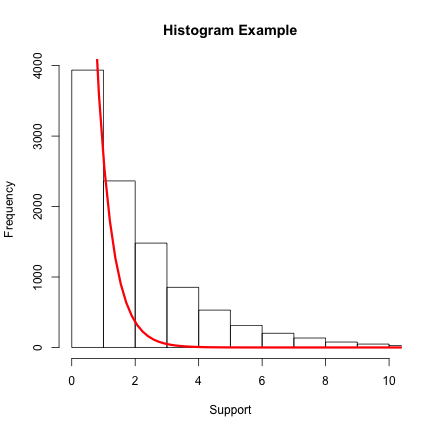
Random Number Generation in R
Use RNG to compare statistical properties of T-test and Wilcoxon Rank Sum test.
set.seed(98765)
dat <- matrix(NA,ncol=2,nrow=1000)
compare.test <- function(mu1=0,sd1=1,mu2=0.05,sd2=1,n=50){
X1 <- rnorm(100,mu1,sd1)
X2 <- rnorm(100,mu2,sd2)
Y1 <- rep(0,length(X1))
Y2 <- rep(1,length(X2))
X <- c(X1,X2)
Y <- c(Y1,Y2)
T.pval <- t.test(X~Y)$p.value
W.pval <- wilcox.test(X~Y,paired=FALSE)$p.value
return(c(T.pval,W.pval))
}
dat <- t(replicate(1000,compare.test(mu1=0,sd1=1,mu2=0.5,sd2=1,n=50)))
sum(ifelse(dat[,1]>0.05,0,1))
sum(ifelse(dat[,2]>0.05,0,1))
Random Number Generation in R
But what if the data are not Normal? Do results still favour the T-test?
set.seed(98765)
dat <- matrix(NA,ncol=2,nrow=1000)
compare.test <- function(df1=1,df2=1.5,n=50){
X1 <- rchisq(100,df1)
X2 <- rchisq(100,df2)
Y1 <- rep(0,length(X1))
Y2 <- rep(1,length(X2))
X <- c(X1,X2)
Y <- c(Y1,Y2)
T.pval <- t.test(X~Y)$p.value
W.pval <- wilcox.test(X~Y,paired=FALSE)$p.value
return(c(T.pval,W.pval))
}
dat <- t(replicate(1000,compare.test(df1=1,df2=1.5,n=50)))
sum(ifelse(dat[,1]>0.05,0,1))
sum(ifelse(dat[,2]>0.05,0,1))
Random Number Generation in R
So what did we learn from the last two R code chunks. The purpose was to demonstrate the use of random number generators from statistical simulation. Basically, statistical estimators are typically valid under certain distributional assumptions. Simulation allows us the opportunity to investigate these properties when theory may elude us.
With respect to the problem at hand:
- In simulation experiment 1 we learned that the T-test is mildly more powerful than the Wilcoxon rank sum test when the distirbution generating the data is Normal.
- In simulation experiment2 we learned that the T-test is much less powerful than the Wilcoxon rank sum test when the distribution gnerating the data is non-Normal (in our case Chi-squared).
In the previous example we are able to compare the efficiency of our test procedures without going into more complicated mathematics of Pittman or Bahadur.
Random Number Generation in R
Random numbers are also useful for drawing (random) statistical samples. These are useful when designing RCT's, etc.
Say for example we have access to 10 people with the following ID's. Our goal is to draw 5 people for inclusion in the control group and 5 people for inclusion into the treatment group.
set.seed(4567)
ID <- paste0(LETTERS[1:10],1:10)
trt <- sample(ID,5,replace=FALSE)
con <- setdiff(ID,trt)
trt
## [1] "C3" "G7" "B2" "J10" "D4"
con
## [1] "A1" "E5" "F6" "H8" "I9"
Random Number Generation in R
Say the design of the trial was such that patients were being prospectively enrolled. In this case we want to generate a sequence of random variables which dictate allocation into the treatment or the control group. Again, say we have plan to enrol 10 patients, one approach to the allocation problem could be as follows:
set.seed(13579)
allocate <- rbinom(10,1,0.5)
allocate
## [1] 0 1 0 1 0 0 0 1 1 0
Random Number Generation in R
In summary, RNG's have many scientific and real life uses. Statisticians make frequent use of RNG's for many purposes, but my take is that they are underutilized by non-statisticians.
Spend a few minutes considering how RNG's may be used in your field of work.
Lab Session (10 minutes)
Random Number Generation in R
- In probability theory there exist a very important law, called the law of large numbers. There are two version of the LLN, and both versions of the law state that – with virtual certainty – the sample average \(\overline{X}_n=\frac1n(X_1+\cdots+X_n)\) converges to the expected value \(\overline{X}_n \to \mu\) as \(n \to \infty\). Using the
rpois()function recreate the following plot and which demonstrates how the sample average converges the \(\lambda\) as the sample size approaches infinity.

Random Number Generation in R
- In applied statistics the bootstrap is an important method which is used to derive estimates of variance, standard error, and confidence intervals in instances where statistical theory may be challenging to derive closed for solutions. A classic example is deriving the 95% CI of the sample median. The procedure can be employed using the
sample()function in R. Consider the algorithm below:
- Draw a sample of size 100 from a normal distribution as follows:
a <- rnorm(100,0,1). - Using
sample(a,100,replace=TRUE)draw a bootstrap sample froma. Calculate the median. - Repeat the sampling step 1000 times using a for loop.
- Rank order the above vector and draw the 25th and 975th values from the ordered sample.
- This will be you 95% bootstrap confidence interval for the sample median.
- Plot the distribution of the bootstrap distribution using
hist()
Data Input/Output in R
Data Input/Output in R
As a Biostatistician I typically receive data in many different formats (e.g. Excel, SPSS, SAS, STATA, etc.). Prior to analysis I must import these data into R. A very complementary task to data import, is data export. Once an analysis is complete it is sometimes necessary to export a cleaned data object from R into some other format.
R has many base functions and user contributed functions (packages) that can assist with data import/export. Two basic and useful functions to consider first include:
read.table()write.table()
When working with more esoteric data types one should investigate the following packages:
XLConnect,xlsx,gdata,RODBCetc...have capabilities to read/write Excel files.foreignandHmischave functions to read/write in SAS and SPSS data files.RODBC,RMySQL,ROracle, andRJDBChave functions to read/write data from databases.
Data Input/Output in R
To demonstrate some of R's import capabilities we will work with the Virginia lung death data. The data were retrieved from Frank Harrell's website. Information on the data can be found here.
The dataset contains information on 8 variables collected from 137 individuals. The variables include:
- Therapy (0=Standard, 1=Test)
- Lung cell type (Adeno, Large, Small, Squamous)
- Time to death (days)
- Death status (dead/censored)
- Karnofsky performance scores
- Months from diagnosis to treatment initiation
- Age in years
- Prior treatment (0=No, 1=Yes)
Importing data into R with read.table()
read.table() imports tabular data and creates a data frame. Important arguments include:
file=specifies the file name and directory path/location where the file residesheader=denotes whether the first row is data or variable namessep=denotes the type of delimter between data points on a given linena.strings=tells R how to handle missing data
X <- read.table("/Users/chris/Documents/Rlecture/DataExamples/VAlung.txt",header=TRUE,sep="\t")
dim(X)
## [1] 137 8
head(X, n=2)
## therapy cell t dead kps diagtime age prior
## 1 standard Squamous 72 dead 60 7 69 no
## 2 standard Squamous 411 dead 70 5 64 yes
Importing data into R with read.table()
Some other notes about read.table().
file=can represent either:- A directory/location of a local file
- A text mode connection (more on
?connectionsat the end of the module) - A URL
sep=can take on variety of separators:- comma:
sep="," - tab:
sep="\t" - semicolon:
sep=";" - whitespace:
sep=" "
- comma:
read.table() versus read.csv()
The read.csv() function is simply a convenience wrapper for read.table(). In other words, it simply specifies the default separator as sep=",".
X <- read.csv("/Users/chris/Documents/Rlecture/DataExamples/VAlung.csv",header=TRUE)
head(X, n=2)
## therapy cell t dead kps diagtime age prior
## 1 standard Squamous 72 dead 60 7 69 no
## 2 standard Squamous 411 dead 70 5 64 yes
X <- read.table("/Users/chris/Documents/Rlecture/DataExamples/VAlung.csv",header=TRUE, sep=",")
head(X, n=2)
## therapy cell t dead kps diagtime age prior
## 1 standard Squamous 72 dead 60 7 69 no
## 2 standard Squamous 411 dead 70 5 64 yes
Excel and R
Arguably, Excel is the most popular format for exchanging datasets (either .xls or .xlsx file extensions). There exist a number of ways for importing Excel data into R.
R-blogger - Nicola Sommacal - lists a number of methods for importing .xls files here.
Note: Importing Excel data can sometimes be challenging. It can depend on what OS you are running, what drivers you have installed, and availability of other third-party software (e.g. availability of Perl, Java, or other software). My naive workflow usually consists of saving the .xls files as .csv and importing data with read.csv().
Excel and R
I've found that the XLConnect packages works well for both .xls and .xlsx packages (caveat: you must install Java for it to work).
suppressPackageStartupMessages(library(XLConnect))
## .xls file extension
X <- loadWorkbook("/Users/chris/Documents/Rlecture/DataExamples/VAlung.xls")
Y <- readWorksheet(X, sheet = "VAlung", header = TRUE)
## Error: unable to find an inherited method for function 'readWorksheet' for
## signature '"jobjRef", "character"'
head(Y,n=1)
## Error: error in evaluating the argument 'x' in selecting a method for function 'head': Error: object 'Y' not found
## .xlsx file extension
A <- loadWorkbook("/Users/chris/Documents/Rlecture/DataExamples/VAlung.xlsx")
B <- readWorksheet(A, sheet = "VAlung", header = TRUE)
## Error: unable to find an inherited method for function 'readWorksheet' for
## signature '"jobjRef", "character"'
head(B,n=1)
## Error: error in evaluating the argument 'x' in selecting a method for function 'head': Error: object 'B' not found
Excel and R
Another useful package for importing/exporting Excel data to/from are is xlsx.
suppressPackageStartupMessages(library(xlsx))
## .xlsx file extension
A <- read.xlsx("/Users/chris/Documents/Rlecture/DataExamples/VAlung.xlsx", sheetName="VAlung")
head(A,n=1)
## therapy cell t dead kps diagtime age prior
## 1 standard Squamous 72 dead 60 7 69 no
R and SPSS, STATA and SAS files
More rarely, collaborators send me their SPSS, SAS or STATA files. These can be read into R using functions from the foreign package. The Hmisc package also has useful utilities.
suppressPackageStartupMessages(library(foreign))
stata <- read.dta("/Users/chris/Documents/Rlecture/DataExamples/VAlung.dta")
head(stata, n=1)
## therapy cell t dead kps diagtime age prior
## 1 standard Squamous 72 dead 60 7 69 no
R and SPSS, STATA and SAS files
suppressPackageStartupMessages(library(foreign))
spss <- read.spss("/Users/chris/Documents/Rlecture/DataExamples/valung.sav",to.data.frame=TRUE)
## Error: file '/Users/chris/Documents/Rlecture/DataExamples/valung.sav' is
## not in any supported SPSS format
head(spss, n=1)
## Error: error in evaluating the argument 'x' in selecting a method for function 'head': Error: object 'spss' not found
The warning message I got on Windows does not seem to have impacted data quality. And more can be learned about its source here.
On Mac I cannot seem to download the .sav file. This might be because I don't have SPSS installed on this operating system?
R and SPSS, STATA and SAS files
Importing SAS files (.sas7bdat extensions) seems more challenging.
- It appears you might need SAS installed for some solutions.
- Or possibly collaborators must send the SAS file not as a .sas7bdat file, but some intermediary export file instead.
I do not pursue this technicality here.
R and Databases
R has functionality to connect, read/write and append data to many types of data bases. Some useful information can be found here and here.
Some useful packages to consider include:
RODBCRMySQLROracleRJDBC
Spector, Matloff, Chambers and other discuss the topic of R connectivity with databases in their books. I do not pursue interfacing R with databases in this workshop.
Exporting Objects Out of R
The most important functions in base R for these tasks are likely write.table() and write.csv().
suppressPackageStartupMessages(library(datasets))
head(cars,2)
## speed dist
## 1 4 2
## 2 4 10
write.csv(x=cars, file="/Users/chris/Documents/Rlecture/DataExamples/cars.csv", row.names=FALSE)
Connections in R
Connections provide a flexible way to read/write data to/from R. They offer the user more control than the pre-built functions like read.table().
Type ?connections into the console to learn a lot more!!
| Function | Data Source |
|---|---|
file() |
Files on local system |
pipe() |
Output from a command |
textConnection() |
Treats text as a file |
gzfile() |
Local gzipped file |
unz() |
Local zip archive with single file (read only) |
bzfile() |
Local bzipped file |
url() |
Remote file via http |
socketConnection() |
Socket for client or server programs |
Reading data from the Internet via url()
The Virginia lung cancer dataset can be found here in .csv format.
We will download it using a call to url():
valungurl <- url("http://biostat.mc.vanderbilt.edu/wiki/pub/Main/DataSets/valung.csv")
X <- read.csv(valungurl,header=TRUE)
head(X,n=2)
## therapy cell t dead kps diagtime age prior
## 1 standard Squamous 72 dead 60 7 69 no
## 2 standard Squamous 411 dead 70 5 64 yes
Input/Output in R
We have quickly glossed over the import and export capabilities in R. I have highlighted functions that I use most often. This is not a complete overview of R's capabilities.
Read the import/export manual on CRAN for full details.
Some basic functions we have skipped include:
readLines(),writeLines(),readBin(),scan()read.fwf()is useful for reading data in fixed width format.
Read in BIG data in R is possible!! Check out this SO thread for more info. There exist some great packages for dealing with BIG data in R.
Lab Session (10 minutes)
Input/Output in R
Delete some elements of data from the
VAlung.csvfile. Save this new file as something new. Experiment with thena.strings=argument inread.csv(). Also, fool around with thecol.namesandcolClassesarguments to read in certain character variables as factors/strings with default versus more sensible column names.Check out the following site containing example datasets in statistics. At the bottom of the page is a dataset called
Support2. Try to download the .zip file, unzip the archive containing a single file, and read the contents into an R dataframe. A hint on how to do it can be found here. And now you know some more cool R functions liketempfile()anddownload.file().
## [1] 9105 47
R Graphics
R Graphics
The ease at which publication quality graphics can be created is one of the major strengths of R relative to competing statistcal programming packages.
Chambers describes the components of a computational graphics system well. Basically, there are 3 parts:
- Graphics elements which describe what is actually drawn.
- Positioning indicators which describe where graphics elements are located.
- Control parameters which define how graphical elements can be modified.
The core of the graphics is really built upon lines(), segments(), points(), text(), colours().
R Graphics
The books by Paul Murrell, Hadley Wickham and Deepayan Sarkar do an excellent job describing base R graphics, grid graphics, ggplot2 and lattice, respectively.
The book by Winston Chang is an excellent cookbook descriibing how to develop graphics in ggplot2 and other R facilities.
Additional resources for learning the various graphics systems and packages in R exist on the web. Some useful learning resources that I have found include:
R Graphics
Murrell (section 1.2) suggests that R graphics functionality can be thought of in 4 layers:
- Graphics Device Packages (
gtkDevice) - Graphics Engine and Devices (
grDevices) - Graphics Systems (
graphicsandgrid) - Graphics Packages (
lattice,ggplot2, etc...)
The grDevices provide support for fundamental graphics tasks such as drawing lines, handling fonts, or adjusting colours.
Functions related to traditional or base R graphics exist in the graphics system. There are high level functions for proudcing full plots, and low-level functions for modifying/adding elements to existing plots.
lattice and ggplot2 are graphics packages that are built of the grid graphics system.
Which Graphics Functions to Use?
The fact that R has two graphics systems and multiple graphics engines to choose from can sometimes confuse newcomers to the language.
Typically, it is easiest to learn base R graphics first. Then learn more advanced plotting packages once having mastered base R graphics; graduating to ggplot2 and lattice.
That said, the choice is somewhat also dependent on the objectives of the task. Certain tasks being better suited towards the base graphicss system and other being better suited for the more complex grid based system and packages.
- If you need a single plot that is produced by one of base R
graphicshigh level functions, then base Rgraphicsis a great fit. - For producing graphical scenes starting from a blank page, the grid system offers the benefit of a much wider range of possibilities, at the cost of a having to learn a few additional concepts.
Base R Graphics
R's base graphics are implemented in the same way as in the S3 system developed by Becker, Chambers, and Wilks. There is a static device, which is treated as a static canvas and objects are drawn on the device through R plotting commands. You build up a picture by drawing fixed things on it, and once something is drawn, it is permanent, though you might be able to cover it with something else, or move to a clean sheet of paper. Since the very beginning, base graphics has been designed to allow easy production of good quality scientific plots.
The device has a set of global parameters such as margins and layouts which can be manipulated by the user using par() commands. The R graphics engine does not maintain a user visible graphics list, and there is no system of double buffering, so objects cannot be easily edited without redrawing a whole plot.
grid Graphics
The grid package provides the basis for a newer graphics system. It also has facilities to produce good quality graphics, but the programmer has access to the individual pieces of a graph, and can modify them: a graph is more like a physical model being built and displayed, rather than just drawn.
grid was designed by Paul Murrell to overcome some of the limitations of the "ink and canvas" approach of base R graphics. And as a result packages like lattice, ggplot2, and others use grid for the underlying primitives.
When using plots designed with grid one needs to keep in mind that grid is based on a system of viewports and graphic objects. To add objects one needs to use grid commands.
grid maintains a stack of viewports from the device and one needs to make sure the desired viewport is at the top of the stack.
Graphical Output and Graphics Devices
Graphical output refers to the objects produced from calls to high-level and low-level functions in R; whereas, graphical devices refer more specifically to where graphical information is directed.
Output is directed to a particular output device and that dictates which output format a specific graphic will be rendered in. A device must be created or “opened” in order to receive graphical output and, for devices that create a file on disk, the device must also be closed in order to complete the output.
GUI output devices include:
x11()in Linux OSwindows()in the Windows OSquartz()in the Max OS
Graphical Output and Graphics Devices
When executing R in batch mode. Or when sourcing files from R scripts graphical output is not directed to the screen. Rather it is stored/saved to a location/directory using the proper graphics device format. Some examples include (?Devices):
pdf()postscript()svg()png()jpeg()bmp()tiff()
The dev.off() function is used to close a graphics device and complete graphical output.
An Overview of this Module
This module will take a more cookbook oriented approach to graphics. Basically, we will list a number of important statistical graphics below and demonstrate how they are created in R.
- Pie chart
- Bar chart
- Dot chart
- Histograms
- 1-D and 2-D Density estimators
- Box plots
- Scatterplots
- Line graphs
- Mathematical curves
- Some more esoteric plots
An Overview of this Module
In base R graphics almost all of the aforementioned functions have an associated high-level function which can be called to create the plot. Other high/low level characteristics can be modified as arguments in the function call itself or by modifying the plot after it is generated.
lattice works similarly in that it is comprised of many high level functions which will simply produce the above graphs. However, it operates slightly differently, specifically using the model formula operator (?"~") to describe relationships between variables. lattice is theoretically based off the work of Bill Cleveland. It is incredibly useful at describing multivariate relationships using a trellis, lattice, facets, etc. type of approach.
ggplot2 creates graphics in quite a different manner than the other two approaches. It is based off the work of Leyland Wilkinson and the grammar of graphics. The work horse of ggplot2 is the ggplot() function which takes on data arguments. The user then adds various geoms or geometric objects to create the desired graph. ggplot2 also supports multivariate data visualization through the use of facetted displays.
Base R graphics
The plot() function is the workhorse of base R graphics. plot() is a generic function in R, and will typically produce a sensible graphic depending on the type of input it is provided (e.g. numeric, categorical, etc.).
Graphical parmaeters can be controlled with the par() function.
For example, one can control margins, plot size, lines, text, colour, etc. Below we demonstrate some standard plots illustrating the base R plotting regions. These are adapted from Ch. 3 of Murrell.
Base R graphics

Base R graphics
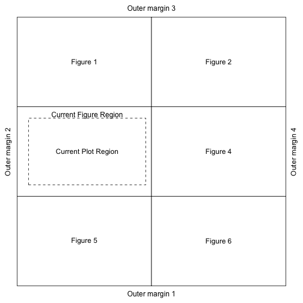
Base R Graphics
Use ?par to learn more about functions that can control plotting in R (MASS: Table 4.3):
par() argument |
Functionality |
|---|---|
din fin and pin |
Device size, figure size and plot size in inches |
fig |
Define figure region as fraction of device region |
mai and mar |
Margin sizes in inches or number of lines |
mfrow and mfcol |
Define the multi-figure display |
oma omi and omd |
Define outer margins in lines, inches or as fraction device region |
plt |
Define plot region as fraction of figure region |
pty |
Define type or shape of plotting region |
Base R Graphics
Other commonly used arguments with base R graphics include (MASS, Table 4.4):
| Global control | par() argument |
Functionality |
|---|---|---|
| Text | adj |
Text justification (0=left, 0.5=center, 1=right) |
| Text | font |
Device dependent font control |
| Text | cex |
Character expansion/size |
| Symbols | col |
Colour |
| Symbols | lty and lwd |
Line type and width |
| Symbols | pch |
Plotting character type |
| Axes | xaxt and yaxt |
Can be used to supress plotting x-y axes (="n") |
| Axes | bty |
Box type around perimter of plot |
| Axes | lab |
Control plot labels |
| Axes | las |
Control label rotation: horizontal, vertical, slanted |
| Axes | tck |
Control tick marks |
Base R Graphics
Other commonly used high level arguments with base R graphics include (MASS, Table 4.4):
| Global control | par() argument |
Functionality |
|---|---|---|
| High level | axes |
Print axes (TRUE/FALSE) |
| High level | main |
Main plot title |
| High level | sub |
Plot sub-title |
| High level | xlab and ylab |
x-y axis labels |
| High level | xlim and ylim |
x-y axis limits |
lattice and ggplot2
Similar grid graphics objects (grobs) and viewports can be used to achieve fine-tuned control over the plots produced by lattice and ggplot2. A wealth of information on grid can be found here.
In general, the plots produced by lattice and ggplot2 have been designed to be high quality and require only a little tweaking. So if you need to really adjust graphical output from these two packages grab one of the books cited or check out some documentation on the web.
graphics, lattice and ggplot2
| Plot type | graphics |
lattice |
ggplot2 |
|---|---|---|---|
| Pie graph | pie() |
||
| Bar chart | barplot() |
barchart() |
geom_bar() |
| Dot chart | dotchart() |
dotplot() |
geom_dotplot() |
| Histograms | hist() |
histogram() |
geom_histogram() |
| Density estimators | plot(density()) |
densityplot() |
geom_density() |
| Box plots | boxplot() |
bwplot() |
geom_boxplot() |
| Scatterplots | plot(...,type="p") |
xyplot() |
geom_point() |
| 2D Density estimators | kde2d() |
contourplot() |
geom_density2d() |
| Time Series Line graphs | plot(...,type="l") |
xyplot() |
geom_line() |
| Logitudinal Interaction Plots | interaction.plot() |
xyplot() |
geom_line() |
| Mathematical curves | curve() |
xyplot() |
geom_line() |
Pie Graphs
Pie graphs are very easy to make in base R - just call pie():
set.seed(123)
a <- sample(LETTERS[1:3],10,replace=TRUE)
table(a)
## a
## A B C
## 2 4 4
pie(table(a))
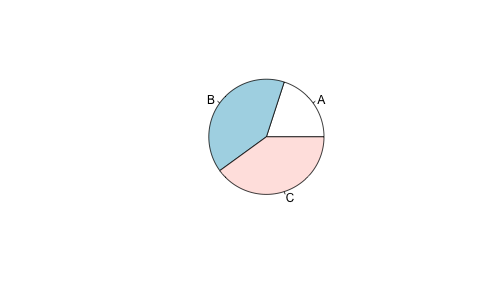
Bar Graphs
For this bar graph example we are going to consider the VADeaths dataset which comes shipped in the datasets matrix in tabular form:
suppressPackageStartupMessages(library(datasets))
VADeaths
## Rural Male Rural Female Urban Male Urban Female
## 50-54 11.7 8.7 15.4 8.4
## 55-59 18.1 11.7 24.3 13.6
## 60-64 26.9 20.3 37.0 19.3
## 65-69 41.0 30.9 54.6 35.1
## 70-74 66.0 54.3 71.1 50.0
Bar Graphs
barplot(VADeaths,beside=TRUE,col=rainbow(5),ylab="Death Rate",xlab="Population Sub-Group",ylim=c(0,100),cex.names=0.7)
legend("topright",legend=c("50-54","55-59","60-64","65-69","70-74"),col=rainbow(5),fill=rainbow(5),bty="n")

Bar Graphs
suppressPackageStartupMessages(library(lattice))
suppressPackageStartupMessages(library(reshape2))
aa <- melt(VADeaths,id.vars=colnames(VADeaths),value.name="Death.Rate")
barchart(Death.Rate ~ Var2, group=Var1, data=aa, ylim=c(0,100), ylab="Death Rate", xlab="Population Sub-Group", auto.key=TRUE)
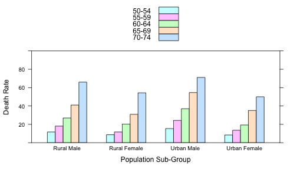
Bar Graphs
suppressPackageStartupMessages(library(ggplot2))
ggplot(aa, aes(x=Var2,y=Death.Rate,fill=Var1)) + geom_bar(position=position_dodge(),colour="black",stat="identity") + xlab("Population Sub-Groups") + ylab("Death Rate") + scale_y_continuous(limits=c(0,100),expand = c(0,0)) + theme_bw()

Dot Charts
dotchart(VADeaths, xlab="Death Rate")

Dot Charts
dotplot(Var1~Death.Rate|Var2,data=aa,layout=c(1,5),xlab="Death Rate",ylab="Population Sub-Group")
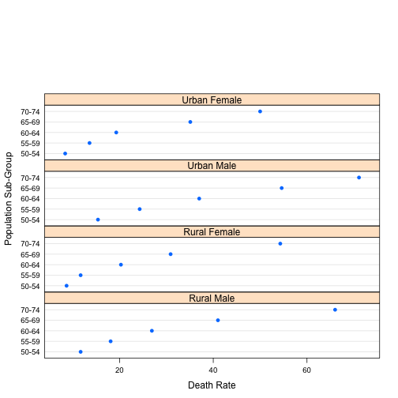
Dot Charts
ggplot(aa, aes(x=Death.Rate,y=Var1)) + geom_point(size=2) + facet_grid(Var2~.)

Histograms
set.seed(1234)
a <- data.frame(a=rnorm(1000))
hist(a$a,xlab="Support",main="Histogram of Normal RVs",xlim=c(-4,4),ylim=c(0,250))
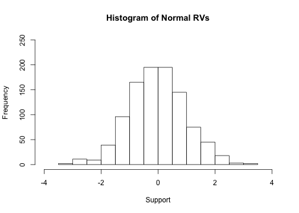
Histograms
histogram(~a,data=a,xlab="Support",main="Histogram of Normal RVs",xlim=c(-4,4),ylim=c(0,250),type="count",col="white",breaks=15)
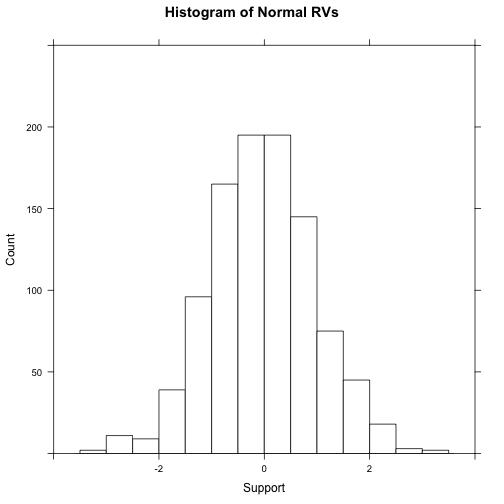
Histograms
ggplot(a, aes(x=a)) + geom_histogram(binwidth=0.5,, colour="black", fill="white") + theme_bw() + xlab("Support")
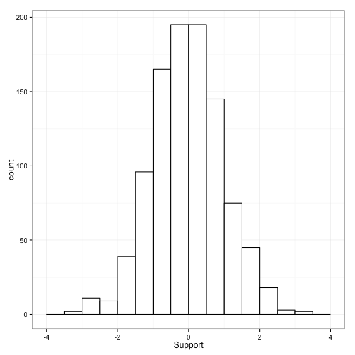
Density Curves
plot(density(a$a),type="l",col="red",lwd=2,xlab="Support",main="KDE Normal RVs")

Density Curves
densityplot(~a,data=a,xlab="Support",main="KDE Normal RVs",col="red",lwd=2,plot.points="rug")

Density Curves
ggplot(a, aes(x=a)) + geom_line(stat="density", colour="red", lwd=2, lty=2) + theme_bw() + xlab("Support")
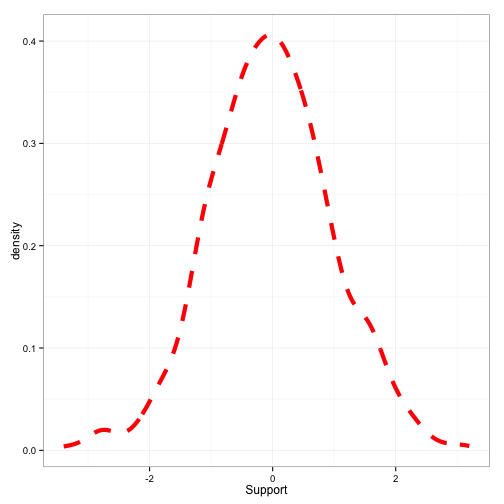
Box plots
boxplot(a$a,ylab="Support")

Box plots
a$f <- factor(rep(1,length(a$a)))
bwplot(a~f,data=a,ylab="Support",xlab="",label=c(""))

Box plots
ggplot(a,aes(y=a, x=f)) + geom_boxplot()

X-Y Scatter plots
suppressPackageStartupMessages(library(MASS))
a <- mvrnorm(100,mu=c(0,0),Sigma=matrix(c(1,0.85,0.85,1),ncol=2))
a <- as.data.frame(a)
names(a) <- c("x","y")
plot(a,main="X-Y Scatter plot MVN data",xlim=c(-3,3),ylim=c(-3,3))

X-Y Scatter plots
xyplot(y~x,data=a,main="X-Y Scatter plot MVN data",xlim=c(-3,3),ylim=c(-3,3))

X-Y Scatter plots
ggplot(a, aes(x=x,y=y)) + geom_point()

2D Density Surfaces
twoD <- with(a,MASS:::kde2d(x,y))
filled.contour(twoD)
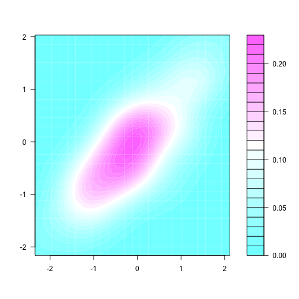
2D Density Surfaces
a <- as.data.frame(cbind(expand.grid(twoD$x,twoD$y),c(twoD$z)))
names(a) <- c("x","y","z")
contourplot(z~x*y,data=a,cut=20,region=TRUE,xlab="X",ylab="Y",main="2D KDE of MVN data")

2D Density Surfaces
ggplot(a, aes(x=x,y=y)) + geom_contour(aes(z=z),data=a)

Time Series Line Graphs
suppressPackageStartupMessages(library(datasets))
class(AirPassengers)
## [1] "ts"
plot(AirPassengers)
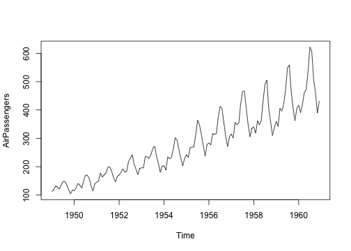
Time Series Line Graphs
ap <- melt(AirPassengers)
apd <- seq.Date(from=as.Date("1949/1/1"),by="month",length.out=144)
air <- data.frame(ap=ap,apd=apd)
xyplot(value~apd,data=air,type="l")
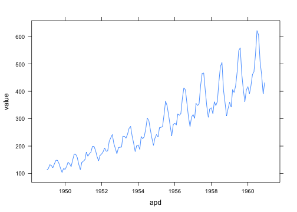
Time Series Line Graphs
ggplot(air, aes(x=apd,y=value)) + geom_line()
## Don't know how to automatically pick scale for object of type ts. Defaulting to continuous

Longitudinal Plots
suppressPackageStartupMessages(library(datasets))
with(Loblolly, interaction.plot(x.factor=age,trace.factor=Seed,response=height))
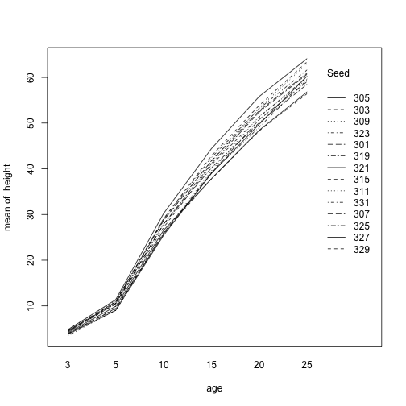
Longitudinal Plots
xyplot(height~age, data=Loblolly, group=Seed,type="l")
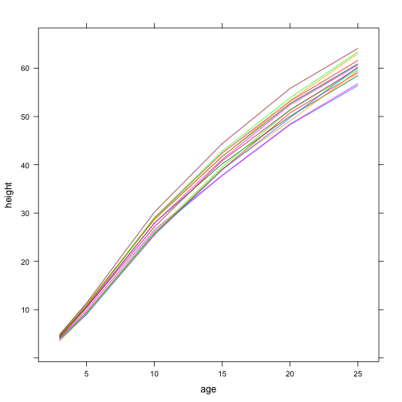
Longitudinal Plots
ggplot(Loblolly, aes(y=height,x=age,group=Seed)) + geom_line()
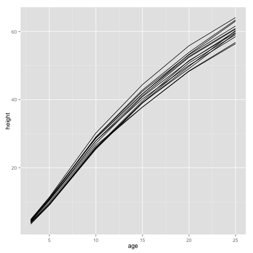
Plotting Math Functions
curve(factorial(x-1),from=1,to=50,n=50,log="y")
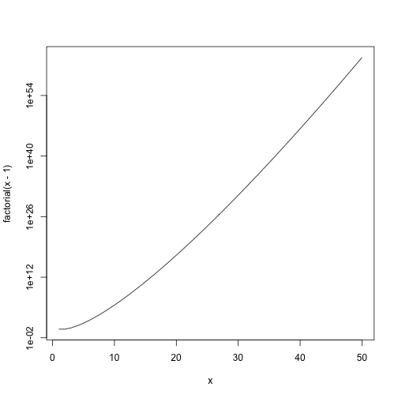
Plotting Math Functions
a <- data.frame(x=1:50,y=factorial(1:50))
xyplot(y~x,data=a,type="l",scales=list(y=list(log="e")))
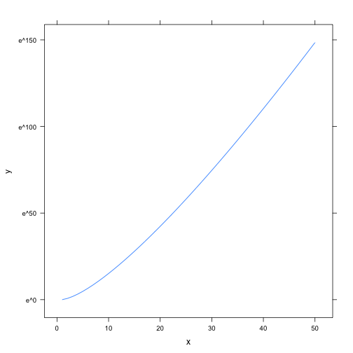
Plotting Math Functions
ggplot(a, aes(x=x,y=y)) + geom_line() + scale_y_log10()

Miscellaneous Graphs
In the upcoming sections we will talk about a few other graph types, namely:
- Scatter plot matrices
- Plots of correlation matrices
- Maps
We will make these using which graphics tools we find convenient (many examples come from Chang, ch. 13). Again, not there are most definitely other ways to go about creating these graphical displays, if the functionality does not suit your needs look for other user contributed packages or create your own.
Scatter Plot Matrices
suppressPackageStartupMessages(library(faraway))
plot(ozone[,1:9])
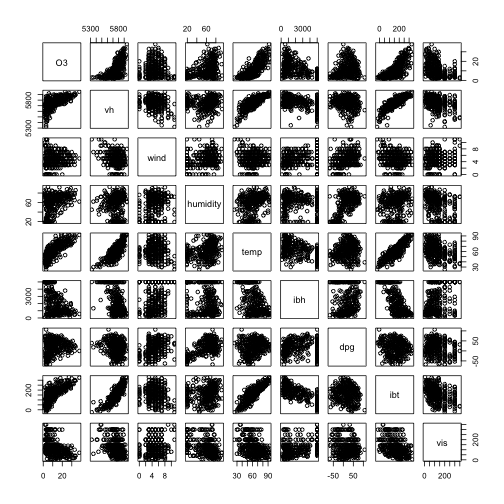
Scatter Plot Matrices
pairs(ozone[,1:9])

Scatter Plot Matrices
suppressPackageStartupMessages(library(lattice))
splom(ozone[1:9])

Plotting Correlation Matrices
cormat <- cor(scale(ozone[,1:9]))
round(cormat,digits=2)
## O3 vh wind humidity temp ibh dpg ibt vis
## O3 1.00 0.61 0.00 0.45 0.78 -0.59 0.21 0.75 -0.44
## vh 0.61 1.00 -0.23 0.07 0.81 -0.50 -0.15 0.85 -0.36
## wind 0.00 -0.23 1.00 0.22 -0.01 0.20 0.34 -0.16 0.13
## humidity 0.45 0.07 0.22 1.00 0.34 -0.24 0.65 0.20 -0.40
## temp 0.78 0.81 -0.01 0.34 1.00 -0.53 0.19 0.86 -0.39
## ibh -0.59 -0.50 0.20 -0.24 -0.53 1.00 0.04 -0.78 0.39
## dpg 0.21 -0.15 0.34 0.65 0.19 0.04 1.00 -0.10 -0.13
## ibt 0.75 0.85 -0.16 0.20 0.86 -0.78 -0.10 1.00 -0.42
## vis -0.44 -0.36 0.13 -0.40 -0.39 0.39 -0.13 -0.42 1.00
Plotting Correlation Matrices
suppressPackageStartupMessages(library(corrplot))
corrplot(cormat)
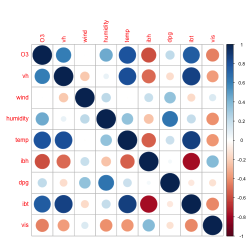
Maps
suppressPackageStartupMessages(library(maps))
suppressPackageStartupMessages(library(mapproj))
states_map <- map_data("state")
ggplot(states_map, aes(x=long,y=lat,group=group)) + geom_path() + coord_map("mercator") + theme_bw()

Maps
Let's do a bit of data manipulation:
- We have a map object with the 50 states
- We know in
datasetspackages there is acrimedataset If we merge these two data sources together we can look at crime rates by state.
crimes <- data.frame(state=tolower(rownames(USArrests)),USArrests)
crime_map <- merge(states_map,crimes,by.x="region",by.y="state")
Maps
ggplot(crimes, aes(map_id=state,fill=Assault)) + geom_map(map=states_map, colour="black") + scale_fill_gradient2(low ="#559999", mid="grey90", high="#BB650B", midpoint=median(crimes$Assault)) + expand_limits(x=states_map$long, y=states_map$lat) + coord_map("polyconic") + theme_bw()

Interactive Data Visualization with R
Some people have gotten bored of looking at static graphs all day long. With the power of the web (HTML5, JavaScript, CSS, etc.) there exist many possibilities for intergrating interactive data visualizations into your workflow.
rCharts by Ramnath Vaidyanathan is one package I love for interactive data visualization. I especially like the NVD3 interface.
Other cool packages that I don't talk about include: googleVis and shiny.
Interactive Data Visualization
First things first, lets get the source code necessary to run these examples from GitHub:
require(devtools)
install_github(c('slidify', 'slidifyLibraries'), 'ramnathv', ref = 'dev')
install_github('rCharts', 'ramnathv')
install_github('shiny', 'rstudio')
rCharts NVD3 multichart
require(rCharts)
haireye = as.data.frame(HairEyeColor)
n1 <- nPlot(Freq ~ Hair, group = 'Eye', type = 'multiBarChart', data = subset(haireye, Sex == 'Male'))
Summary of R Graphics
In this module we introduced R graphics. The ease at which beautiful statistical graphics can be created in R is one of its greatest strengths.
Graphics in R can be divided into 2 systems: graphics and grid. Base R ships many useful high/low level plotting functions. And graphics packages like lattice and ggplot2 offer similar functionality but built on top of the newer grid system.
Most useful functions are summarized in the tables presented earlier in this module. This module took a cookbook style approach presenting various graphical examples, and demonstrating how to develop code to create such graphics in R.
For the most up to date info on all things R graphics, check out the R Graphics Task View.
Lab Session (30 minutes)
R Graphics
- The definition of a sextix polynomial equation is given here. It's general form is given as:
\[ ax^6 + bx^5 + cx^4 + dx^3 + ex^2 + gx + f = 0 \]
Let c(a=2,b=-4,c=1,d=-3,e=5,g=9,f=-10) and plot the function using curve().
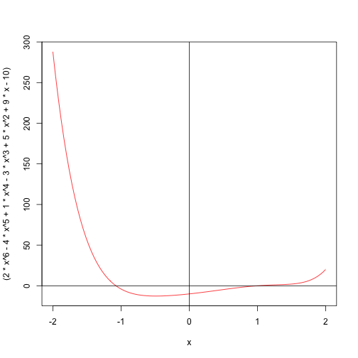
R Graphics
- Use the
MASSpackage to generate multivariate normal data. In all cases havemu=c(0,0). Generate 5 differentSigma=matrix(c(...),ncol=2)matrices: basically varying the off diagonal correlation matrices fromc(-0.85,-0.35,0,0.35,0.85). Use a sample size ofn=500. Use base R graphics to plot the 2D density estimates of each random normal draw. Plot all 5 on a graph using thepar(mfrow=c(3,2))function(s). Explain what you are seeing and why.
- Using the
pbcdataset from thesurvivalpackage plot the distribution of bilirubin for each combination of stage and sex. Do this using a series of histrograms, box plots and univariate density estimators. Use the multi-panel conditioning options fromlatticeandggpplot2.
- On your own, explore possible plotting options associated with dendrograms (
?hclust), network graphs (igraphpackage) or 3D scatterplots inlatticewith the functionwireframe()andcloud().
R Graphics
- Recreate the plot below using base R functions. Data is simulated by
set.seed(12345)followed byrnorm(1000). Hint: search?par.
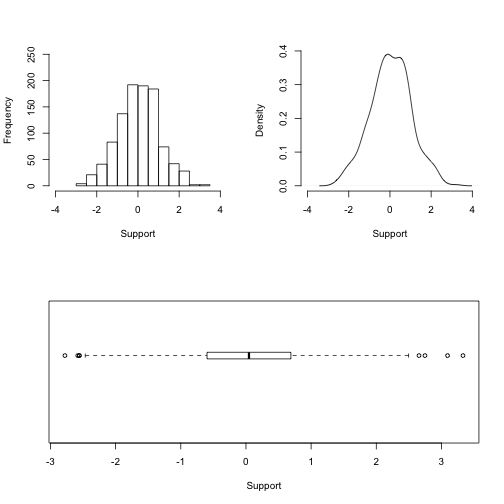
Descriptive Statistics in R
Descriptive Statistics in R
Descriptive statistics relates to describing the main features of a set of data (a collection of random variables). The previous module considered using graphical measures to describe data, in this module we focus on using numeric summaries.
The most coarse means of describing our data is as an n*p tabular array. However, this array of data often contains too much information to be useful. Hence our goal is to come up with some few summary statistics, via a data reduction step, which describes the interesting features in the oroginal data without losing too much information.
Descriptive statistics can take place at many levels:
- Univariate statistics acts to describe the tendencies of variables, one at a time.
- Bivariate statistics acts to describe the relationship between a pair (2) variables at a time.
- Multivariate statistics acts to describe the relationship between p variables at a time.
In this aspect we will briefly touch upon descriptive techniques that exist at all levels (univariate, bivariate and multivariate).
Descriptive Statistics in R
Univariate statistics seek to describe the central tendency and dispersion of a single random variable.
- The mean, median, and mode can be used to describe central tendency.
- The variance, standard deviation, range and quantiles can be used to describe dispersion.
Bivariate statistics act to describe the relationship between a pair of random variables.
- Tabulation can depict associations between discrete variables.
- Correlation coefficients can describe the association between quantitative variables.
Multivariate statistics act to describe the relationship between p-variables in a dataset and are usually based upon correlation or distance matrices. We will not adress them in this workshop, just know R has impressive capabilities for these and other multivariate techniques.
- Principal component analysis
- Cluster analysis
Univariate Statistics
For this module we will work with the pbc dataset from the survival package. We will work on describing the univariate tendencies of a few measures of liver biochemistry, specifically focusing on the bilirubin variable.
suppressPackageStartupMessages(library(survival))
dim(pbc)
## [1] 418 20
sum(is.na(pbc$bili))
## [1] 0
Univariate Statistics
Below we look at a few measures of central tendency:
with(pbc,mean(bili))
## [1] 3.221
with(pbc,median(bili))
## [1] 1.4
How is the mode defined for a (absolutely) continuous variable? Check out the modeest package for an array of available options.
Univariate Statistics
sd(pbc$bili)
## [1] 4.408
var(pbc$bili)
## [1] 19.43
quantile(pbc$bili,probs=seq(0.05,0.95,0.10))
## 5% 15% 25% 35% 45% 55% 65% 75% 85% 95%
## 0.500 0.600 0.800 1.000 1.200 1.600 2.300 3.400 5.945 14.000
Univariate Statistics
min(pbc$bili)
## [1] 0.3
max(pbc$bili)
## [1] 28
range(pbc$bili)
## [1] 0.3 28.0
Univariate Statistics
Describing the distirbution of a single continuous random variable might actually be easier graphically. On the next slides we will look at just a few sensible plots:
- Box-plot
- Histogram
- Density plot
Univariate Statistics
Below is a box-plot describing the main features of the bilirubin variable in this sample. It acts to reiterate the right skewness of the distribution.
boxplot(pbc$bili, ylim=c(0,30), ylab="Bilirubin Levels", main="Boxplot of Bilirubin Levels")
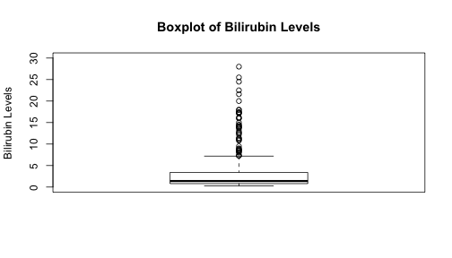
Univariate Statistics
Below is a histogram describing the distribution of bilirubin in this sample. Again, it acts to reiterate the right skewness of the distribution.
hist(pbc$bili, xlab="Bilirubin Levels", main="Histogram of bilirubin levels", ylim=c(0,300),breaks=seq(0,30,2.5))

Univariate Statistics
Below is a kernel density estimate describing the distribution of bilirubin in this sample. Again, it acts to reiterate the right skewness of the distribution.
plot(density(pbc$bili,from=0,to=max(pbc$bili)), xlab="Bilirubin Levels", ylab="Density", main="KDE of Bilirubin Levels",ylim=c(0,0.4))
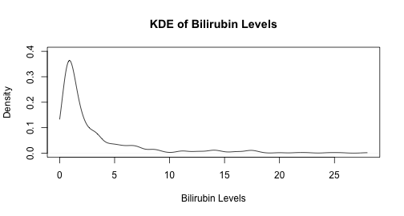
Bivariate Statistics
For discrete/categorical variables tabulation is an effective summary measure. Let us consider the univariate tabulation of ascites and fibrosis and there association.
with(pbc,table(ascites))
## ascites
## 0 1
## 288 24
table(pbc$stage)
##
## 1 2 3 4
## 21 92 155 144
Bivariate Statistics
with(pbc,table(ascites,stage))
## stage
## ascites 1 2 3 4
## 0 16 65 119 88
## 1 0 2 1 21
prop.table(table(pbc$ascites,pbc$stage),margin=1)
##
## 1 2 3 4
## 0 0.05556 0.22569 0.41319 0.30556
## 1 0.00000 0.08333 0.04167 0.87500
Bivariate Statistics
If both categorical variables are binary we can estimate the following epidemiological measures of association to describe bivariate relationships:
Risk Difference (RD) \[ RD = P(Event=1|Exposed=1) - P(Event=1|Exposed=0)\]
Risk Ratio (RR) \[ RR = \frac{P(Event=1|Exposed=1)}{P(Event=1|Exposed=0)} \]
Odds Ratio (OR) \[ OR = \frac{\frac{P(Event=1|Exposed=1)}{1 - P(Event=1|Exposed=1)}}{\frac{P(Event=1|Exposed=1)}{1 - P(Event=1|Exposed=0)}}\]
Bivariate Statistics
Epidemiologists usually prefer there 2*2 table to be laid out as follows:
| Disease | No Disease | |
|---|---|---|
| Exposed | a | b |
| Unexposed | c | d |
If we say \(N=(a+b+c+d)\), then we can calculate RD, RR and OR as follows:
\[ RD = \frac{a}{a+b} - \frac{c}{c+d}\] \[ RR = \frac{\frac{a}{a+b}}{\frac{c}{c+d}}\] \[ RD = \frac{a*d}{b*c}\]
Bivariate Statistics
Let's look into the association between transplant/death and presence of ascites. We recode some variables first.
pbc$status1 <- ifelse(pbc$status==0,1,0)
pbc$ascites1 <- ifelse(pbc$ascites==0,1,0)
ttt <- table(pbc$ascites1,pbc$status1)
p1 <- ttt[1,1]/sum(ttt[1,])
p0 <- ttt[2,1]/sum(ttt[2,])
q1 <- 1 - p1
q0 <- 1 - p0
RD <- round(p1 - p0, digits=3)
RR <- round(p1/p0, digits=3)
OR <- round((p1/q1)/(p0/q0), digits=3)
c(paste0("RD=",RD),paste0("RR=",RR),paste0("OR=",OR))
## [1] "RD=0.538" "RR=2.281" "OR=31.744"
To obtain standard errors etc...code by hand or check out epi and epiR packages.
Bivariate Statistics
There are many measures which seek to describe the dependence between two quantitative variables:
- Pearson's correlation coefficient
- Spearman's correlation coefficient
- Kendall's coefficient tau
All methods are implemented through the the R function cor().
We will use cor() to investigate the association between bilirubin and albumin levels. But before estimating the quantitative correlation coefficient we will look into the association between the pair of variables using a scatter plot.
Bivariate Statistics
Scatter plot of the relationship between bilirubin and copper.
plot(pbc$bili, pbc$copper, xlim=c(0,30),ylim=c(0,600),xlab="Bilirubin",ylab="Copper",main="Bivariate Relationship Between Bilirubin and Copper")
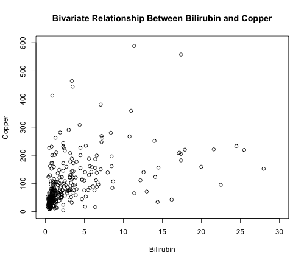
Bivariate Statistics
The bivariate scatter plot suggested a mildly positive relationship between bilirubin and copper. Now we investigate what the quantitative measures of bivariate dependence suggest:
cor(pbc$bili, pbc$copper, use="pairwise", method="k")
## [1] 0.4629
cor(pbc$bili, pbc$copper, use="pairwise", method="s")
## [1] 0.6284
cor(pbc$bili, pbc$copper, use="pairwise", method="p")
## [1] 0.4569
Descriptive Statistics in R
Base R has many capabilities for conducting descriptive statistical analyses. Many analyses can be conducted by calling a simple function on your data object. And R usually returns something sensible.
R can be used for univariate, bivariate and multivariate descriptive analyses.
Plotting distirbutions of single variables, or relationships between 2 or more variables in R is super easy. And these plots are useful complements to numeric descriptive statistics.
One useful function I have not shown too much yet which you should remember is summary(). It will also provide very quick and useful numeric summaries of your data with little effort.
Lab Session (20 minutes)
Descriptive Statistics in R
- Using the
Examdataset in themlmRevpackage Invesitgate the relationship betweennormexamscores andstandLRTscores. Plot the relationship on a graph. Give the axes proper labels, and give the graph a title. Using either theloess()orlowess()functions plot a smooth red line through the cloud of data. Estimate Pearson product moment correlation coefficient. In the top left corner of the graph insert the following text: \(\rho=0.591\). Bonus: describe to yourself (or your peer) what thef=argument inlowess()does. What is the equivalent argument inloess()?

Descriptive Statistics in R
- Is there any association between verbal reasoning scores (
vr) and gender (sex). Describe the association in words.
- Create a dichotomous variable denoting whether a student placed in the top 90% of the normalized exam score or not. Investigate the relationship between the probability of being in the top 90% (outcome) and female gender (exposure). Summarize the strength of this association with an odds ratio. The standard error of the log odds ratio can be approximated as follows:
\[ \widehat{SE(\widehat{log(OR)})} = \sqrt{\frac{1}{a+b+c+d}} \]
- Write an R function that takes on a
2*2table as it's only argument and returns an estimated odds ratio and 95% confidence interval as it's return value.
## [1] "The estimated OR=1.37. The lower and upper 95% CI range from: 1.33 to 1.41"
Inference: Estimation and Hypothesis Testing
Inference: Estimation and Hypothesis Testing
Statistical infererence involves using a finite sample of data to make claims about the underlying mechanism which generated the data. We typically assume some probability model generated our sample of data, and our goal is to make some claims about the specific parametric form of this data generating model.
There exist 3 main branches of statistical inference
R has excellent facilities for both theoretical and applied statisticians looking to advance/apply theory, respectively.
Statistical inference is a massive field. Book length expositions exist on each of the constituent branches. My favourites books on the topic include: Wasserman and Knight.
Point Estimation
For a given parametric model, point estimation is concerned with determining the best possible quantities governing our probability model.
Certain considerations for optimal estimates include: bias, variance, mean squared error, consistency, efficiency, asymptotic normality, etc. Some nice estimation procedures include: the method of moments and the method of maximum likelihood.
Various functions exist for estimating quantities by MOM or MLE, including:
- The
gmmlibrary for generalized method of moments - The
mle()function in thestats4package - Various optimizers such as:
optim(),optimize(), andnlminb()fromlmepackage
In the proceeding sections of this module we will take it for granted that we have reasonable estimators for population quantities, and will transfer focus to the applied problem of esimtating CI's around these point estimates (interval estimation) or testing whether the point estimate equal some given value (hypothesis testing).
Poisson MLE example
set.seed(990099)
x <- rpois(100,5)
mean(x)
## [1] 5.08
var(x)
## [1] 5.731
pmll <- function(lambda, x) {
sumx <- sum(x)
sum_log_xfact <- sum(log(factorial(x)))
n <- length(x)
pmll <- n*lambda - sumx*log(lambda) + sum_log_xfact
pmll
}
Poisson MLE example
mom_lambda <- mean(x)
min_lambda <- nlm(pmll, mom_lambda, hessian=TRUE, x=x)
min_lambda
## $minimum
## [1] 227.6
##
## $estimate
## [1] 5.08
##
## $gradient
## [1] -3.335e-07
##
## $hessian
## [,1]
## [1,] 19.68
##
## $code
## [1] 3
##
## $iterations
## [1] 1
set.seed(990099)
x <- rpois(100,5)
sumx <- sum(x)
sum_log_xfact <- sum(log(factorial(x)))
n <- length(x)
lambda <- seq(from=0, to=10, by=0.1)
ll_surf <- n*lambda - sumx*log(lambda) + sum_log_xfact
Poisson MLE example

Interval Estimation
When presenting a single point estimate of a statistical parameter, we often also want to affix some measure of reliability around the estimate - a confidence interval is a means of accomplishing this task.
The frequentist interpretation of confidence intervals relates to a "repeated sampling" construct. In repeated sampling, we often want to provide an interval that would include the fixed model parameter with high probability (or a large proprtion of times). This is how many people interpret confidence intervals (correctly noting that the parameter is fixed and the interval is random).
Wasserman (p. 92) states that a \(1-\alpha\) level confidence interval for a real valued parameter \(\theta\) is an interval \(C_n=(a,b)\) where \(a\) and \(b\) are function of the data (and themselves random quantities), satisfying the fact:
\[ P_{\theta}(\theta \in C_n) \geq (1-\alpha), \quad \forall \theta \in \mathcal{\Theta} \]
Knight (p. 341) describes the pivotal method as a means of generating interval estimates.
Hypothesis Testing
Hypothesis testing is used to assess/test the plausibility that a model parameter equals a given value (or set of values, if the parameter is vector valued).
There are essentially 4 main elements to hypothesis testing:
- A null hypothesis: \(H_0\)
- An alternative htpothesis: \(H_A\)
- A test statistic (with a known exact/asymptotic distribution under the null)
- A reject region relating to a binary decision rule
When hypothesis testing one can make two types of inferential errors:
| Truth: Maintain \(H_0\) | Truth: Reject \(H_0\) | |
|---|---|---|
| Test: Reject \(H_0\) | Type 1 error | Correct Decision |
| Test: Fail to Reject \(H_0\) | Correct Decision | Type 2 Error |
Given a test statistic and a null distirbution we can also use p-values to inform inferences.
Duality: Interval Estimation and Hypothesis Testing
In certain circumstances there exists a relationship between interval estimation and hypothesis testing. When deriving confidence intervals via the pivotal method this becomes apparent. For example:
\[ Z = \frac{\theta - \hat{\theta}}{\sigma} \rightarrow N(0,1)\]
We can use this knowledge to define a pivotal quantity:
\[ P(-Z_{\frac{\alpha}{2}} \leq Z \leq Z_{\frac{\alpha}{2}}) = 1 - \alpha\] \[ P(-Z_{\frac{\alpha}{2}} \leq \frac{\theta - \hat{\theta}}{\sigma} \leq Z_{\frac{\alpha}{2}}) = 1 - \alpha\] \[ P(\hat{\theta} -Z_{\frac{\alpha}{2}}*\sigma \leq \theta \leq \hat{\theta} + Z_{\frac{\alpha}{2}}*\sigma) = 1 - \alpha\]
This asymptotic standard normal pivotal quantity is used ubiquitously in deriving confidence intervals in biostatistics: means, proportions, differences in means/proportions, log odds/risk ratios, etc.
Duality: Interval Estimation and Hypothesis Testing
The above pivotal quantity lends itself to a sensible decision rule for the following hypothesis as well:
\[ H_0: \hat{\theta} = {\theta}_0 \] \[ H_A: \hat{\theta} \neq {\theta}_0 \]
\[ Z = \frac{\theta - \hat{\theta}}{\sigma} \rightarrow N(0,1)\]
Therefore, if \(|Z| \geq Z_{\frac{\alpha}{2}}\) then we reject \(H_0\); else, we fail to reject \(H_0\). For an alpha rejection region corresponding to \(\alpha=0.05\) we choose \(Z_{\frac{\alpha}{2}}=1.96\) (which is just a quantile from the standard normal distribution).
This would suggest that if our confidence interval embraces the null value that we maintain \(H_0\); else, if our confidence interval does not embrace the null value that we can reject \(H_0\).
Interval Estimation and Hypothesis Testing in R
R has many functions for hypothesis testing. Typically, when you apply these hypothesis test functions to data in R you get an interval estimate for free (because of this duality).
apropos("\\.test$")
## [1] "ansari.test" "bartlett.test" "binom.test"
## [4] "Box.test" "chisq.test" "cor.test"
## [7] "fisher.test" "fligner.test" "friedman.test"
## [10] "kruskal.test" "ks.test" "mantelhaen.test"
## [13] "mauchly.test" "mcnemar.test" "mood.test"
## [16] "oneway.test" "pairwise.prop.test" "pairwise.t.test"
## [19] "pairwise.wilcox.test" "poisson.test" "power.anova.test"
## [22] "power.prop.test" "power.t.test" "PP.test"
## [25] "prop.test" "prop.trend.test" "quade.test"
## [28] "shapiro.test" "spearman.test" "t.test"
## [31] "var.test" "wilcox.test"
Inference about a single proportion
Are the proportion of those dying in the pbc trial equal to 0.50?
\[H_0 \quad P=0.50 \quad \text{versus} \quad H_A \quad P \neq 0.50\]
suppressPackageStartupMessages(library(survival))
prop.test(table(pbc$status1),p=0.50,correct=FALSE)
##
## 1-sample proportions test without continuity correction
##
## data: table(pbc$status1), null probability 0.5
## X-squared = 5.062, df = 1, p-value = 0.02445
## alternative hypothesis: true p is not equal to 0.5
## 95 percent confidence interval:
## 0.3981 0.4929
## sample estimates:
## p
## 0.445
Inference about a single proportion
There are many methods that can be used to estimate CI's for a single proportion. See the Newcombe (1998) reference in ?prop.test. What if we try out the chisq.test() function?
suppressPackageStartupMessages(library(survival))
chisq.test(table(pbc$status1))
##
## Chi-squared test for given probabilities
##
## data: table(pbc$status1)
## X-squared = 5.062, df = 1, p-value = 0.02445
Results are identical to the prop.test() procedure with the correct=FALSE option specified. Note this is not the default functionality of prop.test().
Inference about a single proportion
And there's another approach...see the binom.test() function. It perform an exact test of whether the estimated proportion equals some null value.
binom.test(x=sum(pbc$status1),n=length(pbc$status1),p=0.5)
##
## Exact binomial test
##
## data: sum(pbc$status1) and length(pbc$status1)
## number of successes = 232, number of trials = 418, p-value =
## 0.02761
## alternative hypothesis: true probability of success is not equal to 0.5
## 95 percent confidence interval:
## 0.5059 0.6033
## sample estimates:
## probability of success
## 0.555
Inference about a single mean
We can use a t-test to assess whether an observed mean is equal to some value. For example, lets assess whether the mean bilirubin level in the pbc dataset is equal to 5.
\[H_0 \quad \mu=5 \quad \text{versus} \quad H_A \quad \mu \neq 5\]
t.test(pbc$bili,mu=5,paired=FALSE,conf.level=0.90)
##
## One Sample t-test
##
## data: pbc$bili
## t = -8.253, df = 417, p-value = 2.05e-15
## alternative hypothesis: true mean is not equal to 5
## 90 percent confidence interval:
## 2.865 3.576
## sample estimates:
## mean of x
## 3.221
Inference about a location parameter
The Wilcoxon-Mann-Whitney U-test can be used to assess whether the distribution of some random variable is symmetric about some measure of location (like a mean/median). It is kind of a non-parametric analogue of the 1-sample t-test.
wilcox.test(pbc$bili,mu=5,paired=FALSE,conf.int=TRUE,conf.level=0.90)
##
## Wilcoxon signed rank test with continuity correction
##
## data: pbc$bili
## V = 16299, p-value < 2.2e-16
## alternative hypothesis: true location is not equal to 5
## 90 percent confidence interval:
## 1.8 2.2
## sample estimates:
## (pseudo)median
## 2
Inference for contingency tables
Is there an association between gender and the risk of death/transplant in the pbc dataset?
prop.table(table(pbc$sex,pbc$status1),margin=1)
##
## 0 1
## m 0.6136 0.3864
## f 0.4251 0.5749
chisq.test(table(pbc$sex,pbc$status1))
##
## Pearson's Chi-squared test with Yates' continuity correction
##
## data: table(pbc$sex, pbc$status1)
## X-squared = 4.927, df = 1, p-value = 0.02645
Inference for contingency tables
Is there an association between gender and the risk of death/transplant in the pbc dataset?
fisher.test(table(pbc$sex,pbc$status1))
##
## Fisher's Exact Test for Count Data
##
## data: table(pbc$sex, pbc$status1)
## p-value = 0.02394
## alternative hypothesis: true odds ratio is not equal to 1
## 95 percent confidence interval:
## 1.084 4.346
## sample estimates:
## odds ratio
## 2.144
Inference about two means
Is there an association between gender and the bilirubin in the pbc dataset?
t.test(pbc$bili~pbc$sex)
##
## Welch Two Sample t-test
##
## data: pbc$bili by pbc$sex
## t = -0.9385, df = 89.59, p-value = 0.3505
## alternative hypothesis: true difference in means is not equal to 0
## 95 percent confidence interval:
## -1.2364 0.4431
## sample estimates:
## mean in group m mean in group f
## 2.866 3.263
Inference about two location parameters
We know that the t-test may not be appropriate if the variances are non-homogeneous. Or if the data are markedly non-normal. We can try a non-parametric analogue again: the Wilcoxon-Mann-Whitney U-test.
wilcox.test(pbc$bili~pbc$sex,conf.int=TRUE,conf.level=0.95)
##
## Wilcoxon rank sum test with continuity correction
##
## data: pbc$bili by pbc$sex
## W = 9882, p-value = 0.02897
## alternative hypothesis: true location shift is not equal to 0
## 95 percent confidence interval:
## 8.813e-06 9.000e-01
## sample estimates:
## difference in location
## 0.4
Inference about two location parameters
The t-test and the wilcoxon rank sum test gave different answers. Lets graphically try to investigate things before making firm conclusions.
boxplot(pbc$bili~pbc$sex,xlab="Gender",ylab="Bilirubin Levels",ylim=c(0,30))

Inference about two location parameters
plot(density(pbc$bili[pbc$sex=="m"],from=0),type="l",col="black",ylab="Density",xlab="Bilirubin Levels",xlim=c(0,30),ylim=c(0,0.40),main="")
lines(density(pbc$bili[pbc$sex=="f"],from=0),type="l",col="red")

Inference about two location parameters
by(pbc$bili,pbc$sex,summary)
## pbc$sex: m
## Min. 1st Qu. Median Mean 3rd Qu. Max.
## 0.60 1.30 2.05 2.87 3.50 9.50
## --------------------------------------------------------
## pbc$sex: f
## Min. 1st Qu. Median Mean 3rd Qu. Max.
## 0.30 0.70 1.30 3.26 3.40 28.00
So now what do you think about your inference regarding a potential difference in bilirubin as a function of gender? Is gender associated with bilirubin levels in this sample?
Inference for R*C contingency tables
Is there any association between death/transplant and stage of fibrosis? We can use chisq.test() or fisher.test() again. We could also check for trend using prop.trend.test().
prop.table(table(pbc$status1,pbc$stage),margin=1)
##
## 1 2 3 4
## 0 0.01099 0.15385 0.31868 0.51648
## 1 0.08261 0.27826 0.42174 0.21739
chisq.test(table(pbc$status1,pbc$stage))
##
## Pearson's Chi-squared test
##
## data: table(pbc$status1, pbc$stage)
## X-squared = 46.14, df = 3, p-value = 5.295e-10
Inference for R*C contingency tables
fisher.test(table(pbc$status1,pbc$stage))
##
## Fisher's Exact Test for Count Data
##
## data: table(pbc$status1, pbc$stage)
## p-value = 2.225e-10
## alternative hypothesis: two.sided
Inference for R*C contingency tables
prop.trend.test(table(pbc$status1,pbc$stage)[1,],table(pbc$stage))
##
## Chi-squared Test for Trend in Proportions
##
## data: table(pbc$status1, pbc$stage)[1, ] out of table(pbc$stage) ,
## using scores: 1 2 3 4
## X-squared = 42.05, df = 1, p-value = 8.901e-11
Type prop.trend.test into the R console to see source code for what this test is really doing.
Inference about multiple means
ANOVA is a popular method for testing the equality of many means. The oneway.test() function is one approach to investigating this problem. It does not necessarily assume equal group variances.
Are mean bilirubin levels associated with edema in the pbc dataset?
by(pbc$bili,pbc$edema,summary)
## pbc$edema: 0
## Min. 1st Qu. Median Mean 3rd Qu. Max.
## 0.30 0.70 1.30 2.69 3.20 25.50
## --------------------------------------------------------
## pbc$edema: 0.5
## Min. 1st Qu. Median Mean 3rd Qu. Max.
## 0.40 1.08 2.00 4.73 5.35 28.00
## --------------------------------------------------------
## pbc$edema: 1
## Min. 1st Qu. Median Mean 3rd Qu. Max.
## 0.80 2.48 7.80 9.26 15.20 22.50
Inference about multiple means
oneway.test(pbc$bili~pbc$edema)
##
## One-way analysis of means (not assuming equal variances)
##
## data: pbc$bili and pbc$edema
## F = 10.5, num df = 2.00, denom df = 36.67, p-value = 0.0002487
Inference about multiple location parameters
A non-parametric analogue of the one-way ANOVA is the Kruskal Wallis test. It attempts to assess whether all continuous distributions are equal across some discrete grouping factor, compared to the alternative that at least one distirbution is different from the others.
kruskal.test(pbc$bili~pbc$edema)
##
## Kruskal-Wallis rank sum test
##
## data: pbc$bili by pbc$edema
## Kruskal-Wallis chi-squared = 27.53, df = 2, p-value = 1.051e-06
Inference about correlation coefficient
set.seed(54673)
x <- rnorm(5)
y <- rnorm(5)
cor.test(x,y)
##
## Pearson's product-moment correlation
##
## data: x and y
## t = 2.083, df = 3, p-value = 0.1286
## alternative hypothesis: true correlation is not equal to 0
## 95 percent confidence interval:
## -0.3523 0.9838
## sample estimates:
## cor
## 0.769
Inference: Interval Estimation and Hypothesis Testing
We've explored some of R's base procedures which are useful for estimating confidence intervals or for performing hypothesis testing.
There is sometimes a duality that exists between the two approaches to inference. Where this duality exists R attempts to exploit it, and generally has functionality to return both an interval estimate, and some form of a test statistic and p-value (which can be used for hypothesis testing).
There are MANY other contributed packages that implement user defined routines for point estimation, interval estimation and hypothesis testing. If you have a method in mind that you want to use "google it", and check out the contributed packages on CRAN. User beware though: you have to check the quality of some packages!!
Estimation and hypothesis testing are a HUGE area of theoretical and applied statistics, this module could not do these areas justice. Check out Knight, Wasserman or virtually any book by EL Lehmann for the full details.
Lab Session (30 minutes)
Inference: Interval Estimation and Hypothesis Testing
- The
shapiro.test()function can be used to implement the Shapiro-Wilk test for normality. Consider thepbcdataset in thesurvivalpackage. Columns 11-19 are numeric biochemical variables that are routinely captured in a liver panel. Use aforloop and each iteration applying theshapiro.test()function to a different column. Extract the p-value and store it in a vector. Do the same thing with one of theapply()variants. Which variables do we reject the normality assumption for? Compare the speed of each approach by wrapping both of your routines inproc.time(). This is known as benchmarking. What approach is more computationally efficient?
## user system elapsed
## 0.012 0.000 0.013
## user system elapsed
## 0.011 0.000 0.010
Inference: Interval Estimation and Hypothesis Testing
- Again, using the
pbcdataset in thesurvivalpackage to investigate the relationship between bilirubin and edema. Create side-by-side box-plots of the distirbution of bilirubin for each edema group. Use a kruskal-wallis test to assess whether the distribution of bilirubin varies across edema groups. What groups are different (in a pairwise manner)?
##
## Kruskal-Wallis rank sum test
##
## data: pbc$bili by pbc$edema
## Kruskal-Wallis chi-squared = 27.53, df = 2, p-value = 1.051e-06
Inference: Interval Estimation and Hypothesis Testing
## Warning: cannot compute exact p-value with ties
##
## Pairwise comparisons using Wilcoxon rank sum test
##
## data: pbc$bili and pbc$edema
##
## 0 0.5
## 0.5 0.0220 -
## 1 3.4e-06 0.0073
##
## P value adjustment method: holm
Inference: Interval Estimation and Hypothesis Testing
- In the
MASSpackage, there is a function calledmvrnorm(). It is used to simulate data from a multivariate normal distribution. Use the code below to generate two vectors of correlated normal data. Compare the two distributions usingt.test(). For one iteration usepaired=TRUE, and the other usepaired=FALSE. Explain the difference in p-values. Repeat the process using Sigma asSigma <- matrix(c(1,-0.8,-0.8,1),ncol=2). Re-estimate the t-test statistics. What difference in p-values do you notice now between thepaired=TRUEand the paired=FALSE analyses. Again, explain the differences in p-values.
suppressPackageStartupMessages(library(MASS))
set.seed(12345)
mu <- c(0,0.15)
Sigma <- matrix(c(1,0.8,0.8,1),ncol=2)
dat <- mvrnorm(n=100,mu=mu,Sigma=Sigma)
Inference: Interval Estimation and Hypothesis Testing
- A useful function for comparing changes in paired binary response variables is McNemar's test. It is implemented in R via the
mcnemar.test()function. Use the code below to create correlated binary data and assess if there is a change in proportions across the two correlated vectors of dichotomous data. State in words the conclusion you make from the observed sample of data.
suppressPackageStartupMessages(library(MASS))
set.seed(12345)
mu <- c(0,0.15)
Sigma <- matrix(c(1,0.8,0.8,1),ncol=2)
dat <- mvrnorm(n=100,mu=mu,Sigma=Sigma)
Inference: Interval Estimation and Hypothesis Testing
table(ifelse(dat[,1]>0.5,1,0),ifelse(dat[,2]>0.5,1,0))
##
## 0 1
## 0 46 16
## 1 5 33
mcnemar.test(ifelse(dat[,1]>0.5,1,0),ifelse(dat[,2]>0.5,1,0))
##
## McNemar's Chi-squared test with continuity correction
##
## data: ifelse(dat[, 1] > 0.5, 1, 0) and ifelse(dat[, 2] > 0.5, 1, 0)
## McNemar's chi-squared = 4.762, df = 1, p-value = 0.0291
Regression Models in R
Regression Models in R
Regression models (e.g. linear regression, logistic regression, Poisson regression, Cox PH regression, etc.) seek to describe the relationship between a single response variable and one or more covariates. More specifically, it focuses on describing how the response variable changes, as one or more covariates are changed (holding other fixed).
Typically, we are interested in the expectation function. So we are modelling how the conditional mean (or probability, or rate) changes as we vary covariate values.
\[ r(x) = E(Y|X) \]
Regression models sometimes have different goals which may include: identification of factors associated with a response (explanation), development of models for forecasting and prediction, or (more rarely) inferring causal relationship between response variables and covariates.
Again, Knight and Wasserman give sound introductions to regression modelling.
Linear Regression
Linear regression is a type of regression model with a specific set of assumptions and estimation methods. These include:
- Linearity
- Exogeneity
- Independence
- Homoskedasticity
- Invertability of the design matrix
Mathematically the model take the form:
\[ y_i = \beta_0 + \beta_1 x_{i1} + \cdots + \beta_p x_{ip} + \varepsilon_i = \mathbf{x}^{\rm T}_i\boldsymbol\beta + \varepsilon_i, \qquad i = 1, \ldots, n \]
Again, the linear model seeks to describe how the conditional mean of the response changes as certain covariates are changed.
GLM's (Linear, Logistic, Poisson, etc.)
Generalized linear models (GLM's) extend linear regression, allowing the response variable to be distirbuted according to a non-continuous, non-normal, probability model.
GLM's are specified in terms of 3 components:
- A probability model for the response variable selected from the exponential family of distributions.
- A linear predictor: \(\eta = \mathbf{x}^{\rm T}_i\boldsymbol\beta\)
- A link function \(g()\) such that: \(E(Y)=\mu=g^{-1}(\eta)\)
Intuitively, the linear predictor can take on any value on \(\Re\). However, the mean of the probability distribution presumed to geenrate the data typically lies in some subset of \(\Re\). The link function acts to map the linear predictor from \(\Re\) to the a sensible range for a given probability model. Linear regression would fail to do this, and can make nonsensical predictions: e.g. probabilities outside the range of [0,1], negative rates of events, etc.
Given a probability distirbution for the response variable and a link function, a variance function arises: \(V(Y) = V(\mu) = V(g^{-1}(\mathbf{x}^{\rm T}_i\boldsymbol\beta))\).
GLM's (Linear, Logistic, Poisson, etc.)
Below we tabulate some of the technical details associated with each GLM type model:
| Model | Distribution | Support | Link | Link Function | Inverse Link |
|---|---|---|---|---|---|
| Linear Regression | Normal | \(\Re\) | Identity | \(\mathbf{x}^{\rm T}_i\boldsymbol\beta = \mu\) | \(\mu = \mathbf{x}^{\rm T}_i\boldsymbol\beta\) |
| Logistic Regression | Bernoulli | [0,1] | Logit | \(\mathbf{x}^{\rm T}_i\boldsymbol\beta = ln(\frac{\mu}{1-\mu})\) | \(\mu = \frac{exp(\mathbf{x}^{\rm T}_i\boldsymbol\beta)}{1 + exp(\mathbf{x}^{\rm T}_i\boldsymbol\beta)}\) |
| Poisson Regression | Poisson | \(\Re^{+}\) | Log | \(\mathbf{x}^{\rm T}_i\boldsymbol\beta = ln(\mu)\) | \(\mu = exp(\mathbf{x}^{\rm T}_i\boldsymbol\beta)\) |
In a nutshell:
- The linear regression model is useful for modelling a continuous normally distributed response variable.
- The logistic regression model is useful for modelling binary data.
- The Poisson regression model is useful for modelling count data.
Cox Proportion Hazard Regression Model
The Cox PH model can be loosely viewed as an extension of a GLM. The Cox model is used to model the impact of covariates on the time to some event.
In this case the response is not longer a scalar quantity for each individual. Rather the response is vector based, with one quantity denoting whether the event of interest occurred or not (i.e. the person may have been censored), and the second quantity denoting the time to event/censoring. Mathemtcially we can represent the response as \(Y_i=(t_i,\delta_{i})\).
The model for the hazard rate at time t can be specified as:
\[ \lambda(t|X) = \lambda_0(t)\exp(\beta_1 x_{i1} + \cdots + \beta_p x_{ip}) = \lambda_0(t)\exp(\mathbf{x}^{\rm T}_i\boldsymbol\beta)\]
The proportional hazards assumption states that covariates have a multiplicative effect on the hazard rate, which is constant over t. Though the hazard rate itself may change (as a function of covariates), depending on the specification of the baseline hazard function.
Regression Models in R
R has elegant functionality for fitting regression models, checking model assumptions (model diagnostics), and for doing forecasting/prediction.
The main functions we will explore are: lm() and glm() which are shipped with base R, and also coxph() from the survival package.
Classes are important when fitting regression models in R. Essentially, we will fit a model and store the returned list as an object. The object will have a certain class. As such, we are free to call base R generic function on these objects, and the result is very sensible output: e.g. print(), summary(), plot(), etc.
We can also call sensibly names extract functions on these objects and get back cool results: e.g. coef(), vcov(), resid(), predict(), etc.
A key function for regression modelling in R that we haven't really encountered is the model formula operator, ~. Type ?"~" into the console to learn more. Basically, you put your response variable on the LHS of the operator, and your covariates on the RHS of the operator, and you're off to the races.
Linear Regression in R
In this example we going to work with the ozone dataset from the faraway package. We are going to attempt to investigate the relationship between ozone levels and various other meteorological variables(temperature, humidity, wind speed, etc.). Let's start by summarizing the data:
suppressPackageStartupMessages(library(faraway))
dim(ozone)
## [1] 330 10
names(ozone)
## [1] "O3" "vh" "wind" "humidity" "temp" "ibh"
## [7] "dpg" "ibt" "vis" "doy"
Linear Regression in R
summary(ozone,digits=2)
## O3 vh wind humidity temp
## Min. : 1 Min. :5320 Min. : 0.0 Min. :19 Min. :25
## 1st Qu.: 5 1st Qu.:5690 1st Qu.: 3.0 1st Qu.:47 1st Qu.:51
## Median :10 Median :5760 Median : 5.0 Median :64 Median :62
## Mean :12 Mean :5750 Mean : 4.8 Mean :58 Mean :62
## 3rd Qu.:17 3rd Qu.:5830 3rd Qu.: 6.0 3rd Qu.:73 3rd Qu.:72
## Max. :38 Max. :5950 Max. :11.0 Max. :93 Max. :93
## ibh dpg ibt vis doy
## Min. : 111 Min. :-69 Min. :-25 Min. : 0 Min. : 33
## 1st Qu.: 878 1st Qu.: -9 1st Qu.:107 1st Qu.: 70 1st Qu.:120
## Median :2112 Median : 24 Median :168 Median :120 Median :206
## Mean :2573 Mean : 17 Mean :161 Mean :124 Mean :209
## 3rd Qu.:5000 3rd Qu.: 45 3rd Qu.:214 3rd Qu.:150 3rd Qu.:302
## Max. :5000 Max. :107 Max. :332 Max. :350 Max. :390
Linear Regression in R
round(cor(ozone),digits=2)
## O3 vh wind humidity temp ibh dpg ibt vis doy
## O3 1.00 0.61 0.00 0.45 0.78 -0.59 0.21 0.75 -0.44 0.07
## vh 0.61 1.00 -0.23 0.07 0.81 -0.50 -0.15 0.85 -0.36 0.34
## wind 0.00 -0.23 1.00 0.22 -0.01 0.20 0.34 -0.16 0.13 -0.25
## humidity 0.45 0.07 0.22 1.00 0.34 -0.24 0.65 0.20 -0.40 0.04
## temp 0.78 0.81 -0.01 0.34 1.00 -0.53 0.19 0.86 -0.39 0.24
## ibh -0.59 -0.50 0.20 -0.24 -0.53 1.00 0.04 -0.78 0.39 0.04
## dpg 0.21 -0.15 0.34 0.65 0.19 0.04 1.00 -0.10 -0.13 -0.15
## ibt 0.75 0.85 -0.16 0.20 0.86 -0.78 -0.10 1.00 -0.42 0.22
## vis -0.44 -0.36 0.13 -0.40 -0.39 0.39 -0.13 -0.42 1.00 -0.22
## doy 0.07 0.34 -0.25 0.04 0.24 0.04 -0.15 0.22 -0.22 1.00
Linear Regression in R

Linear Regression in R
It appears a number of factors are related to ozone concentrations (as would be expected, given what we know from atmospheric chemistry).
o3mod <- lm(O3 ~ vh + temp + ibh + ibt,data=ozone)
class(o3mod)
## [1] "lm"
print(o3mod)
##
## Call:
## lm(formula = O3 ~ vh + temp + ibh + ibt, data = ozone)
##
## Coefficients:
## (Intercept) vh temp ibh ibt
## 60.298094 -0.012547 0.387684 -0.000915 0.012690
Linear Regression in R
summary(o3mod)
##
## Call:
## lm(formula = O3 ~ vh + temp + ibh + ibt, data = ozone)
##
## Residuals:
## Min 1Q Median 3Q Max
## -11.775 -3.060 -0.241 2.939 13.065
##
## Coefficients:
## Estimate Std. Error t value Pr(>|t|)
## (Intercept) 60.298094 29.106105 2.07 0.0391 *
## vh -0.012547 0.005360 -2.34 0.0198 *
## temp 0.387684 0.040005 9.69 <2e-16 ***
## ibh -0.000915 0.000280 -3.27 0.0012 **
## ibt 0.012690 0.012836 0.99 0.3236
## ---
## Signif. codes: 0 '***' 0.001 '**' 0.01 '*' 0.05 '.' 0.1 ' ' 1
##
## Residual standard error: 4.72 on 325 degrees of freedom
## Multiple R-squared: 0.658, Adjusted R-squared: 0.654
## F-statistic: 156 on 4 and 325 DF, p-value: <2e-16
Linear Regression in R

Linear Regression in R

Linear Regression in R
Can anyone interpret the final coefficient estimates?
coef(o3mod)
## (Intercept) vh temp ibh ibt
## 60.2980942 -0.0125475 0.3876843 -0.0009151 0.0126900
confint(o3mod)
## 2.5 % 97.5 %
## (Intercept) 3.037942 1.176e+02
## vh -0.023093 -2.002e-03
## temp 0.308983 4.664e-01
## ibh -0.001466 -3.642e-04
## ibt -0.012562 3.794e-02
Linear Regression in R
R has a function called stepAIC(). It is used to perform model selection based on the AIC criteria. It can perform: forward, backward and stepwise regression.
Missing data handling is always an issue in model selection. The default operation in R is to conduct estimate a model on the complete case dataset. In other words, cases with any missing response or covariate information are thrown away prior to estimation of the regression coefficients.
- The implication is that you are comparing measures of model fit on entirely different samples. Is this acceptable practice? I think not, others proceed (blindly) in spite of this shortcoming.
step.o3mod <- stepAIC(lm(O3~vh+wind+humidity+temp+ibh+dpg+ibt+vis+doy,data=ozone))
Linear Regression in R
The predict() function is useful for obtaining model based prediction for new observations and for forescating.
set.seed(13579)
newdat <- data.frame(vh=sample(ozone$vh,3),temp=sample(ozone$temp,3),ibh=sample(ozone$ibh,3),ibt=sample(ozone$ibt,3))
newdat
## vh temp ibh ibt
## 1 5490 58 3044 31
## 2 5850 69 3687 225
## 3 5600 64 5000 70
predict(o3mod,newdat,interval="prediction")
## fit lwr upr
## 1 11.51 1.931 21.08
## 2 13.13 3.736 22.52
## 3 11.16 1.737 20.58
Logistic Regression in R
We are going to use the infert dataset from the datasets library. It considers whether a woman is infertile as a function of a number of maternal characteristics. The outcome case is an element of \({0,1}\). Our goal will be to estimate the probability of being infertile as a function of age, education, parity and number of induced/surgical abortions.
# Ignore the stratum variables (for this naive example)
infert1 <- infert[,1:6]
infert1$induced <- factor(infert1$induced)
infert1$spontaneous <- factor(infert1$spontaneous)
infert1$case <- factor(infert1$case)
dim(infert1)
## [1] 248 6
Logistic Regression in R
# Ignore the stratum variables (for this naive example)
summary(infert1, digits=2)
## education age parity induced case spontaneous
## 0-5yrs : 12 Min. :21 Min. :1.0 0:143 0:165 0:141
## 6-11yrs:120 1st Qu.:28 1st Qu.:1.0 1: 68 1: 83 1: 71
## 12+ yrs:116 Median :31 Median :2.0 2: 37 2: 36
## Mean :32 Mean :2.1
## 3rd Qu.:35 3rd Qu.:3.0
## Max. :44 Max. :6.0
Logistic Regression in R
We fit a number of bivariate logistic regression models to investigate the relationship between infertility and the variables in this dataset. It looks like only spontaneous abortions are predictive of infertility in a bivariate sense.
# Ignore the stratum variables (for this naive example)
m1 <- glm(case~education,data=infert1,family=binomial(link=logit))
m2 <- glm(case~age,data=infert1,family=binomial(link=logit))
m3 <- glm(case~parity,data=infert1,family=binomial(link=logit))
m4 <- glm(case~induced,data=infert1,family=binomial(link=logit))
m5 <- glm(case~spontaneous,data=infert1,family=binomial(link=logit))
Logistic Regression in R
logit.mod <- glm(case~parity+spontaneous+induced+age,data=infert1, family=binomial(link=logit))
logit.mod1 <- update(logit.mod, . ~ . -age)
anova(logit.mod,logit.mod1)
## Analysis of Deviance Table
##
## Model 1: case ~ parity + spontaneous + induced + age
## Model 2: case ~ parity + spontaneous + induced
## Resid. Df Resid. Dev Df Deviance
## 1 241 261
## 2 242 264 -1 -3.03
Logistic Regression in R
summary(logit.mod1)
##
## Call:
## glm(formula = case ~ parity + spontaneous + induced, family = binomial(link = logit),
## data = infert1)
##
## Deviance Residuals:
## Min 1Q Median 3Q Max
## -1.736 -0.876 -0.558 0.934 2.501
##
## Coefficients:
## Estimate Std. Error z value Pr(>|z|)
## (Intercept) -1.129 0.343 -3.29 0.00098 ***
## parity -0.651 0.179 -3.64 0.00028 ***
## spontaneous1 1.723 0.372 4.63 3.7e-06 ***
## spontaneous2 3.686 0.610 6.04 1.6e-09 ***
## induced1 1.020 0.395 2.58 0.00976 **
## induced2 2.200 0.580 3.79 0.00015 ***
## ---
## Signif. codes: 0 '***' 0.001 '**' 0.01 '*' 0.05 '.' 0.1 ' ' 1
##
## (Dispersion parameter for binomial family taken to be 1)
##
## Null deviance: 316.17 on 247 degrees of freedom
## Residual deviance: 263.94 on 242 degrees of freedom
## AIC: 275.9
##
## Number of Fisher Scoring iterations: 4
Logistic Regression in R
Does anyone want to interpret the estimated odds ratios?
exp(coef(logit.mod1)[-1])
## parity spontaneous1 spontaneous2 induced1 induced2
## 0.5216 5.5988 39.8861 2.7737 9.0211
exp(confint(logit.mod1)[-1,])
## Waiting for profiling to be done...
## 2.5 % 97.5 %
## parity 0.3607 0.7294
## spontaneous1 2.7447 11.8790
## spontaneous2 12.7709 141.6208
## induced1 1.2939 6.1294
## induced2 2.9464 29.0263
Logistic Regression in R
Assessing GOF and explained variation in models with limitted dependent variables is more challenging than in the linear model. There are a number of methods that can be implmented:
- Deviance and Pearson \(\chi^{2}\) indices of GOF (statistic divided by DF)
- Raw residuals, Pearson residuals, Deviance residuals, Studentized residuals, etc.
- Hosmer-Lemeshow and related GOF tests
- Various pseduo \(R^2\) measures
- Raw accuracy measures and chance corrected accuracy (kappa)
- ROC Curves and C-indices
- Net reclassification indices and the integrated discrimination index
- Cross-validation and bootstrap methods
These all exist in user contributed R packages. Check them out if they are needed in your line of work.
Poisson Regression in R
We will use the warpbreaks dataset from the dataset package to investigate if the rate of warp breaks per loom as a function of 2 categorical predictors wool type and tension.
suppressPackageStartupMessages(library(datasets))
dim(warpbreaks)
## [1] 54 3
Poisson Regression in R
Let's estimate the mean and variance of the number of warp breaks in each combination of wool type and tension.
suppressPackageStartupMessages(library(plyr))
ddply(warpbreaks, .(wool, tension), summarize, mean=mean(breaks), var=var(breaks))
## Error: argument "by" is missing, with no default
Poisson Regression in R
interaction.plot(warpbreaks$tension,warpbreaks$wool,warpbreaks$breaks,fun=mean,type="l", xlab="Tension",ylab="Mean Number Breaks",legend=FALSE)
legend("topright",c("A","B"),lty=c(2,1),bty="n")

Poisson Regression in R
mod.int <- glm(breaks~wool+tension+wool*tension,data=warpbreaks,family=poisson(link=log))
mod.noint <- glm(breaks~wool+tension,data=warpbreaks,family=poisson(link=log))
anova(mod.noint,mod.int)
## Analysis of Deviance Table
##
## Model 1: breaks ~ wool + tension
## Model 2: breaks ~ wool + tension + wool * tension
## Resid. Df Resid. Dev Df Deviance
## 1 50 210
## 2 48 182 2 28.1
Poisson Regression in R
The Poisson model appears to be struggling with the issue of over-dispersion. i.e. The ratio of the Pearson/Deviance statistic over the DF is far greater than 1. We could remedy this with a quasi-Poisson model or by fitting a negative binomial model. The problem with overdisperion is that inference regarding the coefficients may be impacted by incorrectly estimated standard errors.
suppressPackageStartupMessages(library(MASS))
quasi.int <- glm(breaks~wool+tension+wool*tension,data=warpbreaks,family=quasipoisson(link=log))
nb.int <- glm.nb(breaks~wool+tension+wool*tension,data=warpbreaks)
The impact of the over-dispersion is most pronounced on the Wald test of significance for the interaction term between tension and wool type.
Poisson Regression in R
Again, there are a number of ways to assess model adequacy in Poisson regression models:
- Deviance and Pearson \(\chi^{2}\) indices of GOF (statistic divided by DF)
- Raw residuals, Pearson residuals, Deviance residuals, Studentized residuals, etc.
- Various pseduo \(R^2\) measures
- Comparison of observed counts for various integers versus model predicted values
Cox Proportional Hazards Regression Model
Let us return to our favourite pbc dataset from the survival package. In this package there are two variables denoting time to death/censoring (time) as well as an indicator variable denoting whether a case experienced death over follow-up or was censored (status).
suppressPackageStartupMessages(library(survival))
pbc1 <- pbc[pbc$status!=1,]
Cox Proportional Hazards Regression Model
Before starting, let's just plot the overall survival experience in this sample of patients using a non-parametric Kaplan-Meier estimator of the survival function.
suppressPackageStartupMessages(library(rms))
survplot(npsurv(Surv(as.numeric(time)/365,status1==1) ~ 1, data=pbc), time.inc=2, type="kaplan-meier", conf="none", label=FALSE)
text(7,0.01,"Years Since Study Registration")
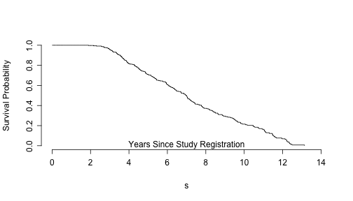
Cox Proportional Hazards Regression Model
coxmod.trt <- coxph(Surv(as.numeric(time),status1==1) ~ trt==2, data=pbc)
summary(coxmod.trt)
## Call:
## coxph(formula = Surv(as.numeric(time), status1 == 1) ~ trt ==
## 2, data = pbc)
##
## n= 312, number of events= 168
## (106 observations deleted due to missingness)
##
## coef exp(coef) se(coef) z Pr(>|z|)
## trt == 2TRUE 0.0466 1.0477 0.1551 0.3 0.76
##
## exp(coef) exp(-coef) lower .95 upper .95
## trt == 2TRUE 1.05 0.954 0.773 1.42
##
## Concordance= 0.512 (se = 0.023 )
## Rsquare= 0 (max possible= 0.992 )
## Likelihood ratio test= 0.09 on 1 df, p=0.764
## Wald test = 0.09 on 1 df, p=0.764
## Score (logrank) test = 0.09 on 1 df, p=0.764
Cox Proportional Hazards Regression Model
coxmod.trt <- coxph(Surv(as.numeric(time),status1==1) ~ trt==2, data=pbc)
exp(coef(coxmod.trt))
## trt == 2TRUE
## 1.048
exp(confint(coxmod.trt))
## 2.5 % 97.5 %
## trt == 2TRUE 0.7731 1.42
Cox Proportional Hazards Regression Model
Again, validating Cox PH models is likely a course in itself:
- Check proportional hazards
- Various residuals (Martingal, Schoenfeld, etc.)
- Time dependent C stats and extensions to AUC, etc.
Regression Models in R
As you can see R has many useful functions for fitting linear models, GLM's (logistic and Poisson models) and semi-parametric time-to-event models (the Cox PH model).
The backbone of all of these models is the ~ model formula operator. Typically, you stick your response variable(s) one the LHS of the operator and your covariates on the RHS and you're off to model fitting and estimation.
The generic functions print, summary, plot are indispensible in model fitting and evaluation. You apply them to objects of known classes and R returns very useful/sensible output.
The ease at which R can fit these and other complex parametric, semi-parametric and non-parametric regression models can be both a blessing and a curse. I purposefully glossed over many important details (this is an R programming course, not a regression course). A thorough treatment of all of these topics likely fill 4+ graduate courses in statistics/biostatistics. Pick up a dense book before delving into model fitting/estimation and make sure you know what you are doing so you don't shoot yourself in the foot!!
Lab Session (30 minutes)
Regression Models in R
Ignore the time variable in the
pbcdataset. Fit a logistic regression model where death/transplant is the outcome. Determine the best possible fitting model for these data. How would you justify your proposed model?Now consider time, fit a Cox PH regression model to outcome considering time and the censoring versus death/transplant indicator. What is the best possible fitting model to these data? Again, how would you justify your answer?
Why are the models from part 1 and part 2 the same or different? i.e. What are they doing differently? And do you expect different results when you fit these two models?
The End...Finally!!
Acknowledgements
Thanks to Dr. Teresa To for inviting me to give this lecture and giving me the opportunity to collect my thoughts about the R programming language in an organized manner. It was a learning experience for me, and I hope you too.
Thanks to Ms. Devon Williams for organizing the workshop. It wouldn't be possible without all her hard work behind the scenes!!
Thanks to Dr. Tom Wright for volunteering his time to help run the lab sessions.
Thanks to Dr. Eva Grunfeld, Dr. Paul Krueger and Dr. Rahim Moineddin for creating such a wonderful work environment for me and others in the Research program at the Department of Family and Community Medicine at the University of Toronto. The trust and autonomy they afford in me allows for these types of projects to occur.
Acknowledgements
- Thanks to the R Core Development Team for providing and continuing such a great environment to conduct statistical research.
- Thanks to all the people at RStudio (the IDE I used when creating this presentation)
- Thanks to Hadley Wickham for his works on
reshape2,plyrand other great packages. - Thanks to Terry Therneau for his work on the
survivalpackage. - Thanks to Yihui Xie for the
knitrpackage. - Thanks to Ramnath Vaidyanathan for
rCharts...I love it!! - And big thanks again to Ramnath Vaidyanathan for the
slidifypackage...and hopefully the death of ugly slideshows!!
And all the other great R developers, contributors, authors, etc...thanks for helping me navigate my way with R!!!